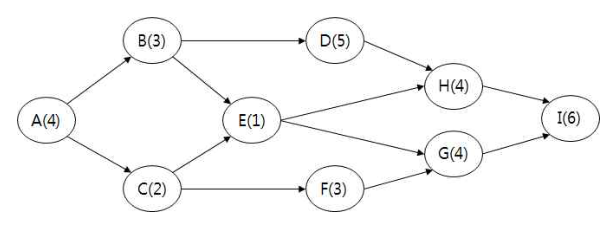

작성 기준: 업로드된 「1-1 정보화법_제도_감리」, 「1-2 사업관리」 강의자료 우선 근거, 외부지식은 보조적으로만 사용(강의자료 미수록 지침은 각 문항에 명시)
정답 출처: 2017년(제18회) 정보시스템 감리사 필기시험 문제 및 답안.pdf (원본 Bold 표시 정답 - 페이지 렌더 이미지 직접 대조 확인)
정답 신뢰도: 매우 높음 (PDF 렌더 이미지 확대 대조로 Bold 표시 검증 완료, 4개 페이지 전 컬럼에 Bold 표시 존재함을 렌더 추적으로 확인)
특이사항
- 문항 6: 원본에 보기 ②·④가 동시에 Bold 처리되어 있어 복수정답으로 확인됨(320dpi 확대 재확인). ②는 원 번호 글리프가 가늘게 조판되어 자동 추출에서는 ④만 검출되었으나, 보기 본문("7월 10일")이 명확히 Bold임을 육안·렌더추적으로 이중 확인함. 리드(Lead)를 "최대 당김 가능 시간"으로 볼 때 두 종료일이 모두 성립하는 문항이다(해설 참조).
법령 기준 주의: 본 회차는 2017년 시행분으로 출제 당시 법령·지침 기준으로 정답이 확정되어 있다. 각 문항의 「관련 이론 정리」 말미에 현행(2025년 기준) 개정사항을 별도 표기하였으므로, 현행 시험 대비 시 반드시 개정 내용을 함께 확인해야 한다.
| 번호 | 정답 | 번호 | 정답 | 번호 | 정답 |
|---|---|---|---|---|---|
| 1 | ① | 10 | ② | 19 | ② |
| 2 | ③ | 11 | ④ | 20 | ④ |
| 3 | ④ | 12 | ③ | 21 | ② |
| 4 | ② | 13 | ② | 22 | ④ |
| 5 | ② | 14 | ① | 23 | ① |
| 6 | ②,④(복수정답) | 15 | ② | 24 | ③ |
| 7 | ④ | 16 | ④ | 25 | ② |
| 8 | ① | 17 | ④ | ||
| 9 | ③ | 18 | ④ |
2017년 제18회는 사업관리 13문항(1~13번) → 법·지침 12문항(14~25번) 배열로, 2018·2019년과 같은 순서다.
사업관리 영역(1~13번) 은 계산 문항 4개(2·5·6·9번) 가 배치되어 계산 비중이 높았다. 형상관리(1번), EVM 50-50법칙 계산(2번), PMBOK 5판 요구사항 문서(3번), 직무설계(4번), 지체일수 계산(5번), SS+리드 종료일 계산(6번, 복수정답), 관리 5단계(7번), 요구사항 도출 기법(8번), 3점산정 확률(9번), 델파이(10번), 리스크 대응전략(11번), 품질비용(12번), 변경관리(13번).
특히 2번(50-50법칙 PV·EV) 과 9번(TE ± 2σ 확률) 은 산식뿐 아니라 진도 측정 규칙과 정규분포 신뢰구간을 함께 알아야 풀리는 복합 계산이며, 5번 지체일수는 검사·불합격·재검사가 얽힌 사례 계산으로 이 회차 최고난도 중 하나였다.
법·지침 영역(14~25번) 은 감리기준·지침·가이드의 조문 세부를 집중적으로 물었다. 감리 실시시기(14번), SW사업 상세 요구사항 유형(15번), 시정조치확인보고서 구성(16번), 구축·운영지침(17번), 감리법인 업무범위(18번), CBD 표준 산출물(19번), 유지보수 사업 점검항목(20번), 소프트웨어용역 계약조건(21번), 감리원 계속교육(22번), SW사업 대가 산정식(23번), WBS(24번), CPM 여유시간(25번).
16·18·22번이 모두 "가·나·다·라 전부(④)"가 정답인 점이 눈에 띈다. "모두 고르면" 유형에서 틀린 항목을 억지로 찾으려다 오답을 고르는 것을 노린 배치로 보인다.
주의할 개정 포인트: 3번의 PMBOK 5판은 현행 7판으로, 21번의 과업변경 심의 기준(100분의 5 → 현행 100분의 10)과 23번의 SW사업 대가 산정식, 22번의 계속교육 기준은 모두 개정 이력이 있다. 각 문항의 「관련 이론 정리」에서 확인할 것.
| 항목 | 내용 |
|---|---|
| 문서명 | 정보시스템 감리사 감리 및 사업관리 기출문제 해설집 - 2017년 제18회 |
| 대상 문항 | Q1 ~ Q25 (감리 및 사업관리) |
| 원본 출처 | 2017년(제18회) 정보시스템 감리사 필기시험 문제 및 답안.pdf |
| 정답 확인 방법 | PDF 페이지 렌더 이미지 대조(굵은 글씨 표시 확인), 자동 추출 결과와 교차검증, 컬럼별 Bold 존재 여부 렌더추적 |
| 특이 문항 | 문항 6 — 복수정답(②,④) |
| 문항 배열 | 사업관리 1~13번 · 법/지침 14~25번(2018·2019년과 동일) |
| 그림 포함 문항 | 문항 25 — CPM 네트워크(assets/2017/q25.png), 서술 전사 병기 |
| 근거 강의자료 | 1-1 정보화법_제도_감리(M01~M06), 1-2 사업관리(M07~M12) |
| 강의자료 미수록(외부지식 보완) 항목 | SW사업 상세 요구사항 유형(15번), CBD 표준 산출물 관리 가이드(19번), 유지보수 사업 표준 점검항목(20번), 감리원 계속교육 세부기준(22번), SW사업 대가 산정식 세부(23번) |
| 법령 기준 | 2017년 출제 당시 기준 + 현행(2025년) 개정사항 병기 |
소프트웨어 형상 관리에 관한 설명으로 가장 거리가 먼 것은?
① 형상식별 활동의 대상에 소스코드와 데이터베이스는 포함되지만 문서 산출물 등은 제외된다.
② 소프트웨어 형상관리는 산출물의 품질 향상에 기여한다.
③ 테스트에서 결함이 발견되면 프로그램은 수정되고 버전 통제를 받게 된다.
④ 대형 소프트웨어 시스템에서는 컴포넌트별로 각각 상이한 버전들이 존재할 수 있다.
정답 : ①번
정답 신뢰도 : 매우 높음 (원본 이미지 Bold 확인)
| 항목 | 내용 |
|---|---|
| 연도 | 2017년 (제18회) |
| 과목 | 감리 및 사업관리 |
| 문항번호 | 1번 |
| 난이도 | 하 |
| 출제주제 | 통합관리 - 소프트웨어 형상관리(SCM) |
| 연도 | 문항번호 | 핵심개념 |
|---|---|---|
| 2017년 | 1번 | 형상식별 대상(문서 포함)(본 문항) |
| 2018년 | 3번 | 통합 변경통제 — 변경관리·형상관리 시스템 기록 |
★★★ 보통 출제
형상식별(Configuration Identification) 은 형상관리의 대상이 되는 항목, 즉 형상항목(CI: Configuration Item) 을 정의하고 식별자를 부여하는 활동이다.
형상항목에는 소스코드·실행파일·데이터베이스 스크립트뿐 아니라 프로젝트 전 과정에서 산출되는 문서가 모두 포함된다.
| 유형 | 예시 |
|---|---|
| 문서 산출물 | 요구사항명세서, 설계서, 아키텍처 정의서, 시험계획서, 사용자 매뉴얼, 운영 매뉴얼 |
| 코드 산출물 | 소스코드, 실행 모듈, 라이브러리 |
| 데이터 | DB 스키마·생성 스크립트, 초기 데이터 |
| 환경 | 빌드 스크립트, 설정 파일, 개발·운영 환경 정의 |
오히려 문서가 형상관리의 핵심 대상이다. 요구사항명세서나 설계서가 버전 통제 없이 수정되면 개발자마다 다른 버전을 보고 작업하게 되어 프로젝트가 무너진다. 따라서 "문서 산출물 등은 제외된다" 고 서술한 ①번이 가장 거리가 멀며 정답이다.
형상관리는 산출물의 버전·변경 이력을 통제하여 일관성과 추적성을 확보하므로 품질 향상에 직접 기여한다. 옳은 설명이다.
테스트에서 결함이 발견되어 프로그램이 수정되면, 수정된 버전은 형상관리 시스템에 등록되어 버전 통제를 받는다. 결함 수정 → 버전 증가 → 재시험이라는 흐름이 형상관리로 관리된다. 옳은 설명이다.
대형 시스템은 컴포넌트 단위로 개발·배포되므로 각 컴포넌트가 서로 다른 버전을 가질 수 있으며, 이들의 조합(Configuration)을 관리하는 것이 형상관리의 역할이다. 옳은 설명이다.
형상관리 4대 활동:
| 활동 | 내용 |
|---|---|
| 형상식별(Identification) | 형상항목(CI) 정의·식별자 부여, 베이스라인 설정 |
| 형상통제(Control) | 변경요청 접수·심의(CCB)·승인·반영, 버전 통제 |
| 형상상태보고(Status Accounting) | 형상항목의 현재 상태·변경 이력 기록·보고 |
| 형상감사(Audit) | 형상항목이 요구사항·기준에 부합하는지 검증(기능·물리 감사) |
베이스라인(Baseline):
| 베이스라인 | 시점 | 대상 |
|---|---|---|
| 기능 베이스라인 | 요구정의 후 | 요구사항명세서 |
| 할당 베이스라인 | 설계 후 | 설계서 |
| 제품 베이스라인 | 구현·시험 후 | 실행 코드·최종 산출물 |
형상관리 vs 변경관리 (자주 혼동):
| 구분 | 형상관리(Configuration Mgmt) | 변경관리(Change Mgmt) |
|---|---|---|
| 대상 | 산출물의 버전·상태 | 변경 요청의 처리 절차 |
| 관심 | "지금 무엇이 어떤 버전인가" | "무엇을 바꿀지 승인할 것인가" |
| 산출물 | 형상목록, 버전 이력, 베이스라인 | 변경요청서, CCB 심의 결과 |
두 개는 짝을 이루어 동작한다 — 변경관리가 "바꿀지"를 결정하면, 형상관리가 "바뀐 결과를 기록·통제" 한다(2018년 3번 ④ "변경사항은 변경관리 및 형상관리 시스템에 입력하여야 한다" 참조).
강의자료 연계(M07 통합관리(1·4장)): 강의자료는 통합 변경통제와 형상관리를 함께 다루며, 변경이 변경관리·형상관리 시스템에 기록되어야 함을 명시한다.
▶ 현행(2025년 기준) 개정사항: 형상관리 개념 자체는 변하지 않았으나, 실무 도구가 Git 기반 분산 버전관리와 CI/CD 파이프라인으로 표준화되었다. 최근에는 IaC(Infrastructure as Code) 로 인프라 설정까지 형상관리 대상에 포함되고, SBOM(소프트웨어 자재명세서) 으로 오픈소스 구성요소까지 관리하는 방향으로 확장되고 있다.
공공 SI 사업에서 감리원이 형상관리를 점검할 때 가장 자주 발견하는 문제가 "소스코드는 Git으로 관리하는데 설계서는 개인 PC에 흩어져 있는 것" 이다. 이 경우 설계서와 실제 코드가 불일치해도 아무도 모르게 되고, 종료단계에서 산출물 검수 시 어떤 문서가 최신본인지 확인할 수 없다. 감리원은 형상관리 계획서에 문서 산출물이 형상항목으로 지정되어 있는지, 형상관리 저장소에 실제로 등록·버전 관리되고 있는지를 점검한다.
형상관리 문항의 정답은 거의 항상 "관리 대상을 좁게 한정하는 보기" 다. "문서는 제외", "코드만 대상", "최종 산출물만 관리" 류 표현이 보이면 오답이다. 형상관리는 "프로젝트에서 만들어지는 모든 것" 을 대상으로 한다고 기억하면 된다.
또한 형상관리 4대 활동(식별·통제·상태보고·감사) 의 이름과 내용을 짝짓는 유형, 형상관리와 변경관리를 구분하는 유형도 자주 출제되므로 함께 정리할 것.
다음 일정 및 원가에 대한 현황 분석표를 보고 질문에 답하시오.
(제시 표)
| 활동이름 | 소요기간 | 소요원가 | 직전 선행활동 |
|---|---|---|---|
| A | 2 | 200 | – |
| B | 2 | 200 | A |
| C | 4 | 400 | A |
| D | 2 | 200 | A |
프로젝트 시작 시점에서 3일차까지 경과한 프로젝트의 성과 현황을 파악해보니, 활동A와 활동B는 각각 100% 완료되었으며, 활동C는 75%, 활동D는 50%가 진척되었다. 이 프로젝트의 3일차까지의 PV(Planned Value)와 EV(Earned Value)를 50-50법칙(rule)을 적용하여 산정하면 각각 얼마인가?
① PV=500, EV=800
② PV=800, EV=700
③ PV=600, EV=700
④ PV=700, EV=600
정답 : ③번
정답 신뢰도 : 매우 높음 (원본 이미지 Bold 확인)
| 항목 | 내용 |
|---|---|
| 연도 | 2017년 (제18회) |
| 과목 | 감리 및 사업관리 |
| 문항번호 | 2번 |
| 난이도 | 상 |
| 출제주제 | 원가관리 - 50-50 법칙을 적용한 PV·EV 산정 |
| 연도 | 문항번호 | 핵심개념 |
|---|---|---|
| 2017년 | 2번 | 50-50 법칙 PV·EV 산정(본 문항) |
| 2018년 | 9번 | SV 계산 |
| 2019년 | 6번 | 진도율 평가 원칙별 진척도 비교 |
| 2020년 | 13번 | EVM 차이·지수 판정 |
★★★★★ 매우 자주 출제
1단계 — 계획 일정(선행관계 반영) 파악
A는 선행활동이 없고 소요기간 2일이므로 1~2일차. B·C·D는 모두 직전 선행활동이 A이므로 A 종료 후, 즉 3일차부터 시작한다.
| 활동 | 소요기간 | 원가 | 계획 일정 | 3일차 종료 시점의 계획 상태 |
|---|---|---|---|---|
| A | 2 | 200 | 1~2일차 | 완료 |
| B | 2 | 200 | 3~4일차 | 착수(진행 중) |
| C | 4 | 400 | 3~6일차 | 착수(진행 중) |
| D | 2 | 200 | 3~4일차 | 착수(진행 중) |
2단계 — PV 산정(계획 기준, 50-50 법칙)
| 활동 | 계획 상태 | 인정률 | 원가 | PV |
|---|---|---|---|---|
| A | 완료 | 100% | 200 | 200 |
| B | 착수 | 50% | 200 | 100 |
| C | 착수 | 50% | 400 | 200 |
| D | 착수 | 50% | 200 | 100 |
| 합계 | 600 |
3단계 — EV 산정(실적 기준, 50-50 법칙)
| 활동 | 실제 진척 | 50-50 적용 | 원가 | EV |
|---|---|---|---|---|
| A | 100% 완료 | 100% | 200 | 200 |
| B | 100% 완료 | 100% | 200 | 200 |
| C | 75% 진척(미완료) | 50% | 400 | 200 |
| D | 50% 진척(미완료) | 50% | 200 | 100 |
| 합계 | 700 |
4단계 — 판정
PV = 600, EV = 700 → 정답 ③번
핵심 함정: C의 실제 진척이 75% 라고 해서 400 × 0.75 = 300을 넣으면 안 된다. 50-50 법칙에서는 완료되지 않은 활동은 진척률과 무관하게 무조건 50% 만 인정한다. 마찬가지로 D의 50% 진척도 "우연히 50%와 같을 뿐" 진척률을 쓴 것이 아니라 착수 인정분 50% 를 적용한 것이다.
참고 해석: EV(700) > PV(600)이므로 SV = +100, 즉 일정이 계획보다 앞서 있다. B가 계획상으로는 진행 중이어야 하는데 실제로는 완료되었기 때문이다.
PV에서 활동 하나를 누락하거나 A를 50%로 계산한 결과이고, EV에서는 C를 완료(400)로 잘못 처리한 값이다.
EV는 맞지만 PV가 틀렸다. PV=800은 B·C·D 중 일부를 완료(100%) 로 계획했다고 본 경우다. 계획상 3일차에는 B·C·D 모두 착수만 한 상태다.
PV와 EV의 값이 서로 뒤바뀐 형태다. 계산은 했으나 어느 쪽이 계획이고 어느 쪽이 실적인지 혼동한 경우 걸리는 함정이다. PV는 "계획대로라면 얼마", EV는 "실제로 해낸 것이 얼마" 임을 구분해야 한다.
진도 측정 원칙별 인정률(2019년 6번과 연계):
| 원칙 | 착수 시 | 완료 시 | 완료 전 진척률 반영 |
|---|---|---|---|
| 0/100 | 0% | 100% | 반영 안 함 |
| 20/80 | 20% | 100% | 반영 안 함 |
| 50/50 | 50% | 100% | 반영 안 함 |
| 완료율법(% Complete) | 실제 진척률 | 100% | 반영함 |
| 가중 마일스톤법 | 마일스톤별 가중치 | 100% | 부분 반영 |
핵심: 0/100·20/80·50/50은 모두 고정 비율 방식이라 진척률을 쓰지 않는다. 진척률을 쓰는 것은 완료율법뿐이다.
본 문항을 완료율법으로 풀면(비교):
| 활동 | 진척률 | 원가 | EV |
|---|---|---|---|
| A | 100% | 200 | 200 |
| B | 100% | 200 | 200 |
| C | 75% | 400 | 300 |
| D | 50% | 200 | 100 |
| 합계 | 800 |
즉 완료율법이면 EV = 800이 되어 보기 ①의 EV와 같아진다. 출제자가 "어느 원칙을 적용하는가" 를 정확히 읽었는지 확인하기 위해 보기 ①에 800을 배치한 것으로 보인다.
PV·EV·AC 정의 복습:
| 지표 | 정의 | 기준 |
|---|---|---|
| PV | 계획된 작업의 예산 | 계획 상태 |
| EV | 완료된 작업의 예산 | 실적 상태 |
| AC | 실제 투입 원가 | 실제 지출 |
강의자료 연계(M10 원가·품질관리 「4. 원가 통제」, 「5. EVM 기본값·차이·지수」, 「7. EVM 계산 기출」): 강의자료는 원가관리 계획수립 시 정의하는 항목으로 "산정 단위·정밀도·통제 한계선·측정 규칙" 을 명시하며, 본 문항의 50-50 법칙이 이 "측정 규칙" 에 해당한다.
SI 프로젝트에서 개발 진척을 완료율법으로 보고하면 "90% 증후군"(90%에서 몇 주째 멈춤)이 발생한다. 이를 막기 위해 실무에서는 작업 단위를 잘게 쪼갠 뒤 0/100 또는 50/50 법칙을 적용한다. 50/50은 "착수했으면 절반은 인정"하므로 팀의 동기를 유지하면서도 완료 전 과대 보고를 막는 절충안이다. 감리원은 진척 보고 검토 시 측정 규칙이 착수 시점에 정의·합의되었는지, 보고서마다 규칙이 바뀌지 않았는지를 확인한다.
50-50 법칙 계산 문항의 풀이 순서는 고정되어 있다.
가장 흔한 실수 두 가지는 ①진척률을 그대로 곱하는 것, ②PV와 EV를 뒤바꾸는 것이다. 보기에 두 값을 서로 바꾼 조합(②·④)이 배치되어 있으면 이 함정을 노린 것이다.
'프로젝트관리 지식체계 지침서(PMBOK) 5판'에서 요구사항 문서를 구성하는 요소 중 가장 적절하지 않은 것은?
① 수행 조직이 따라야 할 비즈니스 규칙을 포함한 비즈니스 요구사항
② 다른 조직 영역에 미치는 영향력을 포함한 이해관계자 요구사항
③ 전환 요구사항
④ 인수기준을 포함한 해결책 요구사항
정답 : ④번
정답 신뢰도 : 매우 높음 (원본 이미지 Bold 확인)
| 항목 | 내용 |
|---|---|
| 연도 | 2017년 (제18회) |
| 과목 | 감리 및 사업관리 |
| 문항번호 | 3번 |
| 난이도 | 상 |
| 출제주제 | 범위관리 - PMBOK 5판 요구사항 문서의 구성요소 |
| 연도 | 문항번호 | 핵심개념 |
|---|---|---|
| 2017년 | 3번 | 요구사항 문서 구성요소(본 문항) |
| 2017년 | 15번 | SW사업 상세 요구사항 유형 |
| 2020년 | 11번 | 운영·유지보수 요구사항정의서 필수항목 |
★★★★ 자주 출제
PMBOK 5판의 요구사항 문서는 다음 요소들로 구성된다.
| 구성요소 | 내용 |
|---|---|
| 비즈니스 요구사항 | 조직 전체의 상위 수준 요구, 비즈니스 규칙, 프로젝트 착수 사유, 추적 가능한 목표 |
| 이해관계자 요구사항 | 이해관계자·이해관계자 그룹의 요구, 다른 조직 영역에 미치는 영향 |
| 해결책(솔루션) 요구사항 | 기능 요구사항(제품이 수행할 동작) + 비기능 요구사항(신뢰성·성능·보안 등 환경 조건) |
| 전환 요구사항 | 현행 상태에서 목표 상태로 이행하는 데 필요한 임시 역량(데이터 전환, 교육 등) |
| 프로젝트 요구사항 | 마일스톤, 계약상 의무, 제약 조건 |
| 품질 요구사항 | 인수기준(Acceptance Criteria), 성공적 완료 여부를 검증하는 조건·기준 |
| 요구사항 가정·종속성·제약 | — |
보기 ④는 "인수기준을 포함한 해결책 요구사항" 이라고 하여 인수기준을 해결책(솔루션) 요구사항에 귀속시켰다. 그러나 PMBOK에서 인수기준은 「품질 요구사항」의 구성요소다.
둘은 다른 범주이므로 ④가 가장 적절하지 않으며 정답이다.
비즈니스 요구사항은 조직 차원의 상위 요구를 담으며, 여기에 수행 조직이 따라야 할 비즈니스 규칙(Business Rules) 이 포함된다. PMBOK 원문의 서술과 일치한다. 옳은 설명이다.
이해관계자 요구사항에는 해당 요구가 다른 조직 영역에 미치는 영향(Impacts to other organizational areas) 이 포함된다. 한 부서의 요구가 다른 부서 업무에 영향을 줄 수 있으므로 이를 함께 기술한다. PMBOK 원문과 일치한다. 옳은 설명이다.
전환 요구사항(Transition Requirements) 은 현행 상태에서 목표 상태로 넘어가는 데 필요한 임시적 역량(데이터 전환, 병행 운영, 사용자 교육 등)을 기술한 것으로, 요구사항 문서의 정식 구성요소다. 옳은 설명이다.
요구사항 유형 분류(PMBOK):
| 대분류 | 세부 | 예시 |
|---|---|---|
| 비즈니스 요구사항 | 조직 목표, 비즈니스 규칙 | "민원 처리 시간을 30% 단축한다" |
| 이해관계자 요구사항 | 개별 이해관계자 요구, 타 영역 영향 | "현업 부서는 모바일 결재를 원한다" |
| 해결책 요구사항 — 기능 | 시스템이 수행할 동작 | "신고 접수 화면을 제공한다" |
| 해결책 요구사항 — 비기능 | 품질 속성·환경 조건 | "동시접속 1,000명, 응답 3초 이내" |
| 전환 요구사항 | 이행에 필요한 임시 역량 | "기존 DB 500만 건 이관, 사용자 교육 3회" |
| 프로젝트 요구사항 | 마일스톤, 계약 의무 | "9월까지 1차 오픈" |
| 품질 요구사항 | 인수기준, 검증 방법 | "결함 0건, UAT 통과 시 인수" |
요구사항 관련 핵심 산출물:
| 산출물 | 내용 |
|---|---|
| 요구사항 문서 | 위 구성요소를 담은 문서 |
| 요구사항 추적 매트릭스(RTM) | 요구사항 ↔ 인도물·설계·시험 케이스 연결 |
| 요구사항관리 계획서 | 요구사항을 어떻게 수집·분석·문서화·통제할지 정의 |
요구사항 문서의 요건:
| 요건 | 내용 |
|---|---|
| 명확성 | 해석의 여지가 없어야 함 |
| 검증 가능성 | 시험으로 충족 여부를 확인할 수 있어야 함 |
| 추적 가능성 | 비즈니스 목표까지 거슬러 올라갈 수 있어야 함 |
| 완전성 | 필요한 요구가 빠짐없이 포함 |
| 일관성 | 요구사항 간 모순 없음 |
강의자료 연계(M09 범위·시간관리 「2. 요구사항 수집·분류」, 「3. WBS 작성·범위기준선」): 강의자료는 요구사항 수집 프로세스의 산출물로 "요구사항 문서, 요구사항 추적 매트릭스(RTM)" 를 명시하고 있다.
▶ 현행(2025년 기준) 개정사항: PMBOK 7판에서는 요구사항 관리가 「기획(Planning)」·「전달(Delivery)」 성과영역에 통합되었고, 산출물 목록은 「모델·방법·결과물」 부록에서 다룬다. 애자일 환경에서는 요구사항 문서 대신 제품 백로그·사용자 스토리·인수 조건(Acceptance Criteria) 형태로 관리하되, "인수기준은 별도로 명시한다" 는 원칙은 오히려 강화되었다(스토리마다 AC를 붙이는 것이 표준).
공공 SI 사업의 요구사항정의서에서 가장 자주 누락되는 것이 인수기준이다. "신고 접수 기능을 제공한다"까지만 적혀 있으면 종료단계에서 "이게 완료된 것이냐"를 두고 다툼이 생긴다. 그래서 실무 표준은 각 요구사항마다 "어떤 조건을 만족하면 완료로 인정하는가" 를 정량적으로 명시하는 것이다(예: "첨부파일 10MB까지 업로드, 3초 이내 응답, 오류 시 안내 메시지 표시"). 감리원은 요구사항정의서에 검증 가능한 인수기준이 있는지, 그것이 시험 케이스로 연결되는지를 RTM으로 추적 점검한다.
요구사항 유형 문항의 함정은 "어느 범주에 무엇이 속하는가"를 뒤섞는 것이다. 특히 인수기준은 직관적으로 "솔루션이 갖춰야 할 조건"처럼 느껴져 해결책 요구사항으로 오인하기 쉽지만, PMBOK은 이를 품질 요구사항으로 분류한다.
기억할 짝:
| 항목 | 소속 |
|---|---|
| 비즈니스 규칙 | 비즈니스 요구사항 |
| 타 조직 영역 영향 | 이해관계자 요구사항 |
| 기능 + 비기능 | 해결책(솔루션) 요구사항 |
| 인수기준·검증 방법 | 품질 요구사항 |
| 데이터 전환·교육 | 전환 요구사항 |
직무설계 원칙 중 생산성을 높이기 위해 가장 기본적으로 사용되는 방법은?
① 직무 충실화
② 직무 단순화
③ 직무 확대
④ 직무 순환
정답 : ②번
정답 신뢰도 : 매우 높음 (원본 이미지 Bold 확인)
| 항목 | 내용 |
|---|---|
| 연도 | 2017년 (제18회) |
| 과목 | 감리 및 사업관리 |
| 문항번호 | 4번 |
| 난이도 | 중 |
| 출제주제 | 인적자원관리 - 직무설계 기법(직무 단순화) |
| 연도 | 문항번호 | 핵심개념 |
|---|---|---|
| 2016년 | 9번 | 직무 설계(단순화·확대·충실화·순환) 설명 판별 |
| 2017년 | 4번 | 생산성 향상의 기본 방법 = 직무 단순화(본 문항) |
| 2020년 | 14번 | 직무 충실화(폭+깊이) · 조직화 원칙 |
★★★★ 자주 출제
직무설계 기법 중 생산성 향상을 직접적·기본적 목적으로 삼는 것은 직무 단순화(Job Simplification) 다.
직무 단순화는 작업을 단순하고 반복적인 최소 단위로 분해하고 처리 절차를 명확히 규정하는 방식이다. 작업자가 좁은 범위의 일을 반복하므로 숙련도가 빠르게 올라가고 교육 비용이 낮아져 단기 생산성이 극대화된다. 컨베이어벨트 방식으로 대표되는 테일러의 과학적 관리법이 그 원형이다.
반면 나머지 세 기법은 생산성 자체보다는 직무 만족·동기부여·유연성을 주목적으로 한다.
| 기법 | 주목적 |
|---|---|
| 직무 단순화 | 생산성·효율 향상(기본적 방법) |
| 직무 확대 | 단조로움 완화, 업무 범위 확대 |
| 직무 충실화 | 동기부여(자율성·책임·권한 부여) |
| 직무 순환 | 다기능 인력 육성, 매너리즘 방지 |
따라서 정답은 ②번이다.
직무에 자율성·책임·의사결정 권한(수직적 확대) 을 부여해 동기부여와 만족도를 높이는 기법이다. 허즈버그의 동기요인 이론에 기반하며, 생산성 향상은 부수적 결과일 뿐 직접적 목적이 아니다.
담당 업무의 종류·범위를 수평적으로 넓혀 단조로움을 완화하는 기법이다. 오히려 직무 단순화의 부작용(단조로움·이직) 을 보완하기 위해 등장한 접근이므로, 생산성 향상의 기본 방법과는 방향이 반대다.
일정 주기로 다른 직무를 담당하게 하여 다기능 인력을 육성하고 매너리즘을 방지한다. 순환 초기에는 오히려 생산성이 일시 하락할 수 있다.
직무설계 기법 비교:
| 기법 | 방향 | 내용 | 목적 | 단점 |
|---|---|---|---|---|
| 직무 단순화 | 분해(축소) | 단순·반복 작업으로 구성, 절차 명확화 | 생산성·효율 | 단조로움·이직·소외감 |
| 직무 확대 | 수평(폭) | 담당 업무 종류·범위 확대 | 단조로움 완화 | 업무량 증가로 인식될 수 있음 |
| 직무 충실화 | 수직(깊이) | 자율성·책임·권한 부여 | 동기부여·만족 | 역량 부족 시 부담 |
| 직무 순환 | 이동 | 주기적으로 다른 직무 담당 | 다기능 육성·매너리즘 방지 | 초기 생산성 저하 |
직무설계 이론의 발전 흐름:
테일러 과학적 관리법(직무 단순화) → 단조로움·소외 문제 발생 → 직무 확대(수평 확장) → 여전히 동기부여 부족 → 직무 충실화(수직 확장, 허즈버그) → 직무특성모형(해크만·올드햄)
해크만·올드햄 직무특성모형(참고):
| 핵심 직무특성 | 내용 |
|---|---|
| 기술 다양성(Skill Variety) | 다양한 기술을 요구하는 정도 |
| 과업 정체성(Task Identity) | 전체 업무를 처음부터 끝까지 완결하는 정도 |
| 과업 중요성(Task Significance) | 타인·조직에 미치는 영향의 크기 |
| 자율성(Autonomy) | 스스로 결정할 수 있는 정도 |
| 피드백(Feedback) | 성과에 대한 정보를 받는 정도 |
앞의 세 가지는 의미감, 자율성은 책임감, 피드백은 결과 인지로 이어져 동기부여를 만든다.
강의자료 연계(M11 인적자원·위험관리 「5. 직무설계(Job Design)」): 강의자료는 직무설계를 "직무를 수행하는 사람에게 의미·만족을 부여하고 조직 성과를 높이도록 직무 내용·수행 방법을 설계하는 것" 으로 정의하고, 유형별로 "직무 단순화 — 단순·반복 작업으로 구성, 절차 명확화 → 효율성", "직무 순환 — 여러 직무를 주기적으로 담당" 등을 표로 정리하고 있다. 본 문항은 강의자료의 "직무 단순화 → 효율성" 대응 그대로다.
SI 프로젝트에서 대량의 화면을 단기간에 개발해야 할 때, 화면 유형별로 표준 템플릿과 공통 컴포넌트를 만들어 개발자가 정해진 패턴만 반복 적용하게 하는 것이 직무 단순화의 적용이다. 생산성은 크게 올라가지만 개발자의 성장 욕구는 채워지지 않으므로, 실무에서는 일부 개발자에게 아키텍처·성능 튜닝 같은 도전적 과업(직무 충실화)을 병행 부여해 균형을 맞춘다. PM은 두 기법을 상충 관계가 아니라 역할·인력별로 나누어 적용하는 것이 중요하다.
직무설계 문항은 각 기법의 "주목적 키워드" 하나씩만 잡으면 즉답이 가능하다.
| 키워드 | 기법 |
|---|---|
| 생산성 · 효율 · 반복 · 절차 명확화 | 직무 단순화 |
| 폭 · 범위 · 종류 확대 · 수평 | 직무 확대 |
| 자율성 · 책임 · 권한 · 깊이 · 수직 | 직무 충실화 |
| 주기적 이동 · 다기능 | 직무 순환 |
특히 확대(폭) ↔ 충실화(깊이) 를 뒤바꾸는 함정이 가장 자주 나오므로(2020년 14번 참조), "확대는 넓게, 충실화는 깊게"로 외워 둘 것.
다음과 같이 수행된 A사업의 지체상금 산정을 위한 지체일수로 가장 적절한 것은?
(제시 상자)
- C공공기관의 정보시스템을 구축하는 A사업의 계약기간은 1월 1일 ~ 10월 31일까지이다.
- A사업을 맡은 B사는 계약기간 만료 전에 사업을 완료하여 10월 15일에 검사를 요청하였다.
- 검사결과는 불합격이었으며, 10월 25일에 불합격 통보를 받았다.
- B사는 불합격통보에 따른 보완을 수행하여 11월 10일에 재검사를 요청하였다.
- 재검사결과는 합격이었으며, 11월 15일에 합격 통보를 받았다.
① 5일
② 15일
③ 21일
④ 31일
정답 : ②번
정답 신뢰도 : 매우 높음 (원본 이미지 Bold 확인)
| 항목 | 내용 |
|---|---|
| 연도 | 2017년 (제18회) |
| 과목 | 감리 및 사업관리 |
| 문항번호 | 5번 |
| 난이도 | 상 |
| 출제주제 | 용역계약 일반조건 - 지체상금 산정을 위한 지체일수 계산 |
| 연도 | 문항번호 | 핵심개념 |
|---|---|---|
| 2017년 | 5번 | 사례 기반 지체일수 계산(본 문항) |
| 2018년 | 16번 | 지체기간 산정 도해 판별 |
| 2020년 | 4번 | 기한 경과 후 검사요청 시 전 구간 산입 |
★★★★ 자주 출제
1단계 — 사실관계 정리
| 시점 | 사건 |
|---|---|
| 1/1 ~ 10/31 | 계약기간 |
| 10/15 | 검사 요청(계약기간 내) |
| 10/25 | 불합격 통보(보완 지시) |
| 11/10 | 보완 완료 → 재검사 요청 |
| 11/15 | 최종 합격 통보 |
2단계 — 적용 규정
「용역계약 일반조건」의 지체일수 산정 원칙은 다음과 같다.
3단계 — 계산
계약기간 만료일이 10/31이고 최종 합격일이 11/15이므로,
지체일수 = 11월 1일 ~ 11월 15일 = 15일
따라서 정답은 ②번이다.
핵심 포인트: B사가 계약기간 내(10/15)에 검사를 요청했다는 사실이 검사 소요기간(10/15~10/25)을 지체에서 제외해 주는 근거는 되지만, 불합격으로 인해 최종 완결이 계약기간을 넘어간 이상 그 초과분(11/1~11/15)은 계약상대자의 책임이다. 즉 "기한 내 검사요청"이 지체를 완전히 면제해 주지는 않는다.
11/10(재검사 요청) ~ 11/15(합격) = 5일로 계산한 값이다. 재검사에 걸린 기간만 지체로 본 것인데, 재검사 소요기간은 발주기관 영역이고 정작 계약기간을 넘긴 11/1~11/10 구간(보완에 소요된 기간)이 빠져 있다. 가장 작게 잡은 오답이다.
10/25(불합격 통보 다음날) ~ 11/15(합격) = 21일로, 보완지시일부터 최종 합격일까지를 산입한 값이다. 그러나 10/26~10/31 구간은 아직 계약기간 이내이므로 지체일수가 될 수 없다. "보완에 걸린 기간을 모두 산입" 이라는 규정을 계약기간과 무관하게 적용한 오류다.
10/15(검사 요청) ~ 11/15(합격) = 31일로, 검사 요청 시점부터 전부를 지체로 본 값이다. 검사 소요기간은 원칙적으로 산입 대상이 아니고 10월 구간은 계약기간 이내이므로 명백히 과다하다.
지체일수 산정 케이스 정리:
| 케이스 | 조건 | 지체일수 |
|---|---|---|
| A | 기한 내 검사요청 + 기한 내 합격 | 0일 |
| B | 기한 내 검사요청 + 불합격·보완 → 기한 내 최종 합격 | 0일(보완이 기한 내 완료) |
| C(본 문항) | 기한 내 검사요청 + 불합격·보완 → 기한 경과 후 최종 합격 | 계약기간 익일 ~ 최종 합격일 |
| D | 기한 경과 후 검사요청 | 계약기간 익일 ~ 최종 합격일 전부 |
※ 케이스 C와 D는 결과적으로 산정 구간이 같다 — "계약기간을 넘긴 시점부터 최종 합격일까지".
2017년 5번 vs 2018년 16번 vs 2020년 4번 비교(지체일수 3문항 세트):
| 연도·문항 | 상황 | 정답 논리 |
|---|---|---|
| 2017년 5번(본 문항) | 기한 내 검사요청 → 불합격 → 기한 경과 후 최종 합격 | 계약기간 익일 ~ 최종 합격일 = 15일 |
| 2018년 16번 | 도해 4종 중 규정에 맞는 것 고르기 | 기한 내 제출 + 시정조치 → 시정조치일 ~ 최종 합격일(③) |
| 2020년 4번 | 기한 경과 후 검사요청 | (a)+(b)+(c)+(d) 전부 산입(④) |
세 문항 모두 "계약기간을 기준으로 언제부터 지체가 시작되는가" 를 묻는다.
지체상금 산정:
| 항목 | 내용 |
|---|---|
| 지체상금 | 계약금액 × 지체상금률 × 지체일수 |
| 지체상금률 | 계약예규에서 정한 요율(계약 유형별 상이) |
| 공제 사유 | 불가항력, 발주기관 책임 있는 사유, 관계법령 개정 등 |
강의자료 연계(M02 감리 법·지침 「12. 용역계약일반조건 - 지체상금」): 강의자료는 지체상금 산정 Case를 Case 1~4로 나누어 도해와 함께 설명하고 있으며, 본 문항은 그중 "기한 내 검사요청 + 불합격 후 기한 경과 합격" 케이스에 해당한다.
▶ 현행(2025년 기준) 개정사항: 「(계약예규) 용역계약일반조건」은 2024.12.24. 개정본이 최신이며, 지체일수 산정의 기본 구조(계약기간 기준 판단) 는 그대로 유지된다. 지체상금률은 개정되었으므로 금액 계산 문항이 나오면 최신 요율을 확인해야 한다.
이 사례는 실무에서 매우 흔하다. 사업자가 기한을 지키려고 서둘러 검사를 요청했지만 산출물이 미비해 불합격을 받고, 보완하는 동안 계약기간이 지나가는 상황이다. 이때 사업자는 "우리는 기한 내에 요청했으니 지체가 없다"고 주장하고, 발주기관은 "결국 기한 내에 완결하지 못했다"고 반박한다. 규정상으로는 발주기관 주장이 맞되, 검사에 걸린 기간(10/15~10/25)은 사업자 책임이 아니므로 계약기간 이내로 흡수된다. 감리원은 종료단계에서 검사 요청일·불합격 통보일·재검사 요청일·최종 합격일 네 시점을 문서로 확인하고 지체일수 산정의 적정성을 점검한다.
지체일수 계산 문항은 날짜를 세는 문제가 아니라 "기산점을 찾는 문제" 다. 풀이 순서를 고정하면 실수가 없다.
보기에 검사요청일 기준(31일)·불합격통보일 기준(21일)·재검사요청일 기준(5일) 이 나란히 배치되어 있으면, 출제자가 "기산점을 어디로 잡는지" 를 묻는 것이다. 답은 언제나 계약기간 만료 익일이다.
프로젝트 일정에서 활동A와 활동B가 있다. 활동A의 소요기간(duration)은 2일이며 활동B의 소요기간은 3일로 계획하고 있다. 두 활동 사이의 의존관계는 시작-시작(Start-to-Start)이고, 2일의 선도(Lead) 관계를 갖고 있다. 연중무휴 근무 조건에서 활동A의 시작일이 7월 10일이라면 활동B의 예상 종료일로 가능한 것은?
① 7월 9일
② 7월 10일
③ 7월 11일
④ 7월 12일
정답 : ②번, ④번 (복수정답 처리)
정답 신뢰도 : 매우 높음 (원본 답안 이미지에서 ②의 보기 본문 "7월 10일"과 ④ "7월 12일"이 모두 Bold 처리되어 있음을 320dpi 확대 대조로 확인. ②는 원 번호 글리프만 가늘게 조판되어 자동 추출에서는 검출되지 않았으나 본문 Bold는 명확함. 문항이 "가능한 것은?" 이라는 열린 표현을 사용해 두 값이 모두 성립하는 구조다)
| 항목 | 내용 |
|---|---|
| 연도 | 2017년 (제18회) |
| 과목 | 감리 및 사업관리 |
| 문항번호 | 6번 |
| 난이도 | 상 |
| 출제주제 | 시간관리 - SS(시작-시작) 관계와 리드(Lead) 적용 일정 계산 |
| 연도 | 문항번호 | 핵심개념 |
|---|---|---|
| 2017년 | 6번 | SS + 리드 종료일(본 문항, 복수정답) |
| 2019년 | 4번 | 리드의 정의 — "후행이 당겨질 수 있는 시간" |
| 2018년 | 10번 | ADM은 FS만 표현 가능 |
★★★★ 자주 출제
1단계 — 리드(Lead)의 정의 확인
리드는 "후행 활동이 선행 활동에 대하여 당겨질 수 있는 시간의 양" 이다(2019년 4번 '다' 항목이 이 정의를 옳은 설명으로 제시한다). 여기서 핵심은 "당겨질 수 있는(can be advanced)" 이라는 표현으로, 반드시 그만큼 당겨야 한다는 의무가 아니라 최대 그만큼까지 당길 수 있다는 허용 범위를 뜻한다.
2단계 — B의 시작 가능 범위
B의 시작 가능 범위 = 7월 8일 ~ 7월 10일
3단계 — 종료일 계산(소요기간 3일, 연중무휴)
| B 시작일 | 작업일(3일) | B 종료일 | 보기 |
|---|---|---|---|
| 7월 8일(리드 2일 최대 적용) | 7/8, 7/9, 7/10 | 7월 10일 | ② |
| 7월 9일(리드 1일 적용) | 7/9, 7/10, 7/11 | 7월 11일 | ③ |
| 7월 10일(리드 미적용, A와 동시 시작) | 7/10, 7/11, 7/12 | 7월 12일 | ④ |
4단계 — 판정
문항이 "예상 종료일로 가능한 것은?" 이라고 물었으므로, 리드를 최대로 적용한 경우(7/10, ②) 와 적용하지 않고 A와 동시에 시작한 경우(7/12, ④) 가 모두 성립한다. 원본 답안에서 ②와 ④가 모두 Bold 처리된 것은 이 때문으로 판단되며, 복수정답이다.
※ ③(7월 11일)은 왜 정답이 아닌가: 리드 1일만 적용해 7/9에 시작하면 산술적으로는 7/11 종료가 가능하다. 그럼에도 정답에 포함되지 않은 것은, 출제자가 "리드를 온전히 적용한 계획값(②)" 과 "리드를 적용하지 않은 기준값(④)" 이라는 두 극단만을 유효한 답으로 인정했기 때문으로 보인다. 실무 일정계획에서도 리드는 통상 정해진 값을 그대로 적용하거나 적용하지 않거나 둘 중 하나로 설정되며, 중간값을 임의로 쓰지는 않는다.
B가 7/7에 시작해야 나오는 값이다. 리드가 2일이므로 최대 7/8까지만 당길 수 있어 허용 범위를 벗어난다.
리드를 1일만 적용해 7/9에 시작한 경우의 종료일이다. 산술적으로 불가능하지는 않으나, 원본 답안에서 Bold 처리되지 않았다(위 「정답 해설」 4단계 각주 참조).
PDM 의존관계 4종:
| 관계 | 의미 | 제약식 |
|---|---|---|
| FS(Finish-to-Start) | 선행 종료 → 후행 시작 | 후행 시작 ≥ 선행 종료 |
| SS(Start-to-Start) | 선행 시작 → 후행 시작 | 후행 시작 ≥ 선행 시작 |
| FF(Finish-to-Finish) | 선행 종료 → 후행 종료 | 후행 종료 ≥ 선행 종료 |
| SF(Start-to-Finish) | 선행 시작 → 후행 종료(드묾) | 후행 종료 ≥ 선행 시작 |
리드 vs 래그:
| 개념 | 방향 | 의미 | 표기 |
|---|---|---|---|
| 리드(Lead) | 당김(−) | 후행 활동을 앞당길 수 있는 시간 | SS − 2일 |
| 래그(Lag) | 지연(+) | 후행 활동을 미뤄야 하는 시간 | FS + 3일 |
본 문항의 관계 표기: SS − 2일(시작-시작, 리드 2일)
연중무휴 조건에서의 기간 계산 주의:
| 항목 | 계산 |
|---|---|
| 시작일 포함 여부 | 시작일을 1일차로 포함 |
| 3일 소요 활동이 7/8 시작 | 7/8(1일차), 7/9(2일차), 7/10(3일차 = 종료일) |
| 흔한 실수 | 시작일 + 소요기간 = 종료일로 계산(7/8 + 3 = 7/11 ✕) |
즉 종료일 = 시작일 + 소요기간 − 1이다.
강의자료 연계(M09 범위·시간관리 「6. 선후행 관계(PDM)·리드·래그」): 강의자료는 PDM 관계 4종과 리드·래그를 별도 절로 정리하고 있다.
▶ 현행(2025년 기준) 개정사항: PDM 관계와 리드·래그 개념은 PMBOK 7판에서도 「모델·방법·결과물」 부록에 그대로 유지된다. 현대 일정관리 도구는 리드를 음수 래그(negative lag)로 입력받는다.
"설계가 완전히 끝나기 전에 개발을 착수한다"는 전형적인 패스트 트래킹이 FS 관계에 리드를 부여하는 방식으로 구현된다(예: FS − 10일 = 설계 종료 10일 전에 개발 착수). 본 문항처럼 SS에 리드를 주면 후행이 선행보다 먼저 시작하게 되는데, 실무에서는 이런 설정이 논리적으로 어색해 잘 쓰이지 않는다(대개 SS + 래그를 쓴다). 감리원은 일정계획 검토 시 리드·래그가 부여된 활동의 근거가 문서화되어 있는지, 리드로 인해 선행 산출물 없이 후행이 시작되는 위험이 관리되고 있는지를 점검한다.
일정 계산 문항에서 반드시 확인할 세 가지다.
특히 본 문항처럼 "가능한 것은?" 이라는 표현이 나오면 단일 값이 아니라 범위를 묻는 것일 수 있으므로 주의해야 한다. 반대로 "종료일은 언제인가?"처럼 단정적으로 물으면 리드를 온전히 적용한 값 하나만 답이 된다.
프로젝트 관리 과정 다섯 단계(계획, 조직화, 충원, 지휘, 통제)에 관한 설명으로 가장 거리가 먼 것은?
① 계획은 목적과 목표를 정하고 이를 달성하기 위한 행동 방안을 결정하는 것이다.
② 조직화는 조직 구성원들이 담당할 역할 구조를 설정하는 것이다.
③ 충원은 설정된 업무에 인원을 배치하고 인적 자원을 관리하는 것이다.
④ 통제는 목표를 달성하도록 동기부여하고 의사소통하는 것이다.
정답 : ④번
정답 신뢰도 : 매우 높음 (원본 이미지 Bold 확인)
| 항목 | 내용 |
|---|---|
| 연도 | 2017년 (제18회) |
| 과목 | 감리 및 사업관리 |
| 문항번호 | 7번 |
| 난이도 | 중 |
| 출제주제 | 관리 일반 - 관리 과정 5단계(계획·조직화·충원·지휘·통제) |
| 연도 | 문항번호 | 핵심개념 |
|---|---|---|
| 2017년 | 7번 | 관리 과정 5단계 설명 판별(본 문항) |
| 2019년 | 12번 | 조직구조 설계 6대 핵심요소 |
★★ 가끔 출제
관리 과정(Management Process) 5단계는 각각 다음을 담당한다.
| 단계 | 영문 | 핵심 활동 |
|---|---|---|
| 계획(Planning) | Planning | 목적·목표 설정, 달성을 위한 행동 방안 결정 |
| 조직화(Organizing) | Organizing | 업무 분담, 역할 구조·권한 관계 설정 |
| 충원(Staffing) | Staffing | 인원 선발·배치·교육·평가 등 인적자원 관리 |
| 지휘(Directing/Leading) | Directing | 동기부여 · 의사소통 · 리더십으로 구성원을 목표로 이끎 |
| 통제(Controlling) | Controlling | 성과 측정 → 계획과 비교 → 편차 분석 → 시정조치 |
보기 ④는 "통제는 목표를 달성하도록 동기부여하고 의사소통하는 것"이라고 했는데, 동기부여와 의사소통은 「지휘(Directing)」의 핵심 활동이다. 통제는 결과를 재고 계획과 비교해 바로잡는 활동이므로 설명이 다른 단계와 뒤바뀌었다. 따라서 가장 거리가 먼 것은 ④번이다.
계획(Planning) 은 목적과 목표를 정하고 이를 달성하기 위한 행동 방안(전략·정책·절차·일정) 을 결정하는 단계다. 정확한 설명이다.
조직화(Organizing) 는 수행할 업무를 나누고 구성원이 담당할 역할 구조와 권한·책임 관계를 설정하는 단계다. 정확한 설명이다.
충원(Staffing) 은 설정된 직무에 적합한 인원을 배치하고 교육·평가·보상 등 인적자원을 관리하는 단계다. 정확한 설명이다.
관리 과정 5단계 상세:
| 단계 | 산출물·활동 예시 | 프로젝트관리 대응 |
|---|---|---|
| 계획 | 목표 설정, 전략·일정·예산 수립 | 프로젝트관리 계획서 |
| 조직화 | 조직도, R&R 정의, 권한 위임 | RAM·RACI, OBS |
| 충원 | 인력 선발·배치·교육 | 자원 확보, 팀 개발 |
| 지휘 | 동기부여, 의사소통, 갈등 관리, 리더십 | 팀 관리, 이해관계자 참여관리 |
| 통제 | 성과 측정, 편차 분석, 시정조치 | EVM, 변경통제, 품질통제 |
통제(Controlling)의 4단계 순환:
| 순서 | 활동 |
|---|---|
| 1 | 기준(표준) 설정 — 무엇과 비교할 것인가 |
| 2 | 실제 성과 측정 |
| 3 | 비교·편차 분석 — 기준 대비 차이 |
| 4 | 시정조치(Corrective Action) |
지휘 vs 통제 (본 문항의 핵심 구분):
| 구분 | 지휘(Directing) | 통제(Controlling) |
|---|---|---|
| 대상 | 사람 | 성과·결과 |
| 활동 | 동기부여·의사소통·리더십·갈등관리 | 측정·비교·시정 |
| 시점 | 수행 중 지속 | 수행 중·후 |
| 도구 | 리더십 스타일, 커뮤니케이션 계획 | EVM, 관리도, 진척 보고 |
PMBOK 프로세스 그룹과의 대응(참고):
| 관리 5단계 | PMBOK 프로세스 그룹 |
|---|---|
| 계획 | 기획(Planning) |
| 조직화·충원·지휘 | 실행(Executing) |
| 통제 | 감시 및 통제(Monitoring & Controlling) |
강의자료 연계(M07 통합관리(1·4장), M11 인적자원·위험관리): 강의자료는 프로젝트 관리 프로세스 그룹(착수·기획·실행·감시통제·종료)과 인적자원관리의 동기이론·리더십을 다루고 있다. 관리 과정 5단계는 경영학 일반 이론으로, 프로젝트관리 프로세스 그룹과 대응시켜 이해하면 된다.
PM이 흔히 저지르는 실수가 "통제와 지휘를 혼동해 지표만 관리하는 것" 이다. 주간 회의에서 진척률·결함 건수만 점검(통제)하고 팀원의 동기·갈등(지휘)은 방치하면, 지표는 관리되는데 팀은 무너진다. 반대로 관계 관리에만 치중하고 객관적 성과 측정을 소홀히 하면 문제를 늦게 발견한다. 실무에서는 주간 회의는 통제(EVM·이슈 현황), 1:1 면담은 지휘(동기·애로사항) 로 채널을 나누어 운영하는 것이 표준이다.
관리 5단계 문항은 각 단계의 대표 동사(키워드) 하나씩만 잡으면 즉답이 가능하다.
| 키워드 | 단계 |
|---|---|
| 목표 설정 · 방안 결정 | 계획 |
| 역할 구조 · 권한 · 분담 | 조직화 |
| 인원 배치 · 선발 · 교육 | 충원 |
| 동기부여 · 의사소통 · 리더십 | 지휘 |
| 측정 · 비교 · 시정조치 | 통제 |
가장 자주 나오는 함정이 본 문항처럼 지휘와 통제를 뒤바꾸는 것이다. "사람을 이끄는 것 = 지휘, 결과를 재는 것 = 통제" 로 기억하면 헷갈리지 않는다.
고객과 개발자가 공동 작업 형태로 요구사항을 도출하는 방법으로 가장 적절하지 않은 것은?
① 동료검토(peer review)
② 요구사항 워크숍
③ JAD(Joint Application Development)
④ 일-대-일 인터뷰
정답 : ①번
정답 신뢰도 : 매우 높음 (원본 이미지 Bold 확인)
| 항목 | 내용 |
|---|---|
| 연도 | 2017년 (제18회) |
| 과목 | 감리 및 사업관리 |
| 문항번호 | 8번 |
| 난이도 | 중 |
| 출제주제 | 범위관리 - 요구사항 도출 기법(공동 작업 형태) |
| 연도 | 문항번호 | 핵심개념 |
|---|---|---|
| 2017년 | 8번 | 요구사항 도출 기법 판별(본 문항) |
| 2017년 | 10번 | 델파이 방법 |
| 2018년 | 7번 | 명목집단법(NGT) |
★★★ 보통 출제
문항이 묻는 것은 "고객과 개발자가 공동 작업 형태로 요구사항을 도출하는 방법" 이다. 즉 ①고객이 참여하고, ②요구사항을 새로 끌어내는(도출) 활동이어야 한다.
동료검토(Peer Review) 는 개발자·설계자 등 동료 전문가들이 이미 작성된 산출물(요구사항명세서, 설계서, 소스코드)을 검토해 결함을 찾는 품질 활동이다. 두 가지 점에서 문항 조건과 어긋난다.
| 조건 | 동료검토 |
|---|---|
| 고객이 참여하는가 | ✕ — 개발 측 동료들이 수행 |
| 요구사항을 도출하는가 | ✕ — 이미 작성된 것을 검토(검증) |
따라서 가장 적절하지 않은 것은 ①번이다.
②③④는 모두 고객이 참여해 요구사항을 끌어내는 도출 기법이다.
고객·현업 담당자와 개발자가 한자리에 모여 집중적으로 요구사항을 도출·합의하는 촉진 세션이다. 대표적인 공동 작업형 도출 기법이다.
이름 자체가 "공동(Joint) 애플리케이션 개발" 이다. 고객·사용자·개발자가 함께 세션을 진행하며 요구사항을 도출하고 즉석에서 합의·문서화하는 기법으로, 문항 조건에 가장 정확히 부합한다.
"공동 작업 형태"라는 표현이 집단 세션을 연상시켜 오답으로 오인하기 쉬우나, 인터뷰는 고객(피면담자)과 개발자(면담자)가 직접 대화하며 요구사항을 끌어내는 가장 기본적인 도출 기법이다. 참여 인원이 적을 뿐 고객과 개발자의 공동 활동이라는 점은 동일하다.
요구사항 수집(도출) 기법:
| 기법 | 형태 | 특징 |
|---|---|---|
| 인터뷰 | 1:1 또는 소수 | 심층 파악, 시간 소요 |
| 요구사항 워크숍 | 집단 세션 | 이해관계자 합의 신속 도출 |
| JAD | 집단 세션(구조화) | 고객·개발자 공동, 즉석 문서화 |
| 포커스 그룹 | 집단 토론 | 정성적 의견 수집 |
| 브레인스토밍 | 집단 발산 | 아이디어 양 우선 |
| 명목집단법(NGT) | 개별 작성 + 투표 | 편향 방지, 정량 결정 |
| 델파이 | 비대면·익명·반복 | 전문가 합의 |
| 설문지 | 다수 대상 | 대규모 수집, 심층성 부족 |
| 관찰(Job Shadowing) | 현장 관찰 | 암묵적 요구 발견 |
| 프로토타이핑 | 시제품 피드백 | 요구 구체화 |
| 문서 분석 | 기존 문서 | 현행 업무 파악 |
도출(Elicitation) vs 검증(Verification/Validation) 구분:
| 구분 | 목적 | 대표 기법 |
|---|---|---|
| 도출 | 요구사항을 새로 끌어냄 | 인터뷰, 워크숍, JAD, 브레인스토밍, 관찰, 프로토타이핑 |
| 검증·확인 | 작성된 요구사항의 정확성·완전성 점검 | 동료검토(Peer Review), 워크스루, 인스펙션, 요구사항 검토회의 |
검토(Review) 기법의 종류(참고):
| 기법 | 주관 | 형식성 | 특징 |
|---|---|---|---|
| 동료검토(Peer Review) | 동료 | 낮음~중간 | 작성자가 동료에게 설명·검토 요청 |
| 워크스루(Walkthrough) | 작성자 | 중간 | 작성자가 주도해 설명하며 진행 |
| 인스펙션(Inspection) | 훈련된 중재자(Moderator) | 높음 | 공식 절차·역할·체크리스트, 결함 검출률 최고 |
강의자료 연계(M09 범위·시간관리 「2. 요구사항 수집·분류」, M10 원가·품질관리 「9. 품질계획 수립·도구」): 강의자료는 요구사항 수집 프로세스를 다루며, 품질 영역에서 "Peer-review(동료검토)는 중간 산출물의 결함을 조기에 발견하는 기법" 이라고 명시하고 있다. 즉 동료검토가 품질(검증) 기법임이 강의자료에 직접 근거를 두고 있다.
공공 SI 사업의 분석 단계에서는 현업 부서별 인터뷰 → 요구사항 워크숍(전체 합의) → 프로토타입 검토의 3단계를 거치는 것이 표준이다. 요구사항정의서가 작성된 뒤에는 동료검토로 개발 측 내부 품질을 먼저 점검하고, 그 다음 고객 검토회의로 확인을 받는다. 즉 동료검토는 고객에게 문서를 내보이기 전 단계의 내부 활동이다. 감리원은 요구정의단계 감리에서 도출 기법의 다양성(특정 부서 편중 여부)과 검토 이력의 존재를 함께 점검한다.
이 유형의 판별 기준은 두 가지다.
① 고객(사용자)이 참여하는가? ② 새로 끌어내는가, 이미 있는 것을 점검하는가?
동료검토·워크스루·인스펙션은 모두 ②에서 탈락(검증 기법)하므로, 요구사항 도출 기법을 묻는 문항에서 이 셋 중 하나가 보이면 그것이 정답이다. 반대로 "요구사항 검증 기법이 아닌 것"을 물으면 인터뷰·워크숍·JAD가 정답이 되는 대칭 구조다.
또한 "공동 작업" 이라는 표현 때문에 일-대-일 인터뷰(④) 를 고르는 실수가 잦은데, 인터뷰도 고객과 개발자가 함께하는 도출 활동이므로 조건을 충족한다는 점을 기억할 것.
과거 축적된 데이터를 이용하여 어떤 프로젝트의 활동A에 대한 소요기간을 추정하려 한다. 이 데이터에 의하면, 최소기간이 5일, 최대기간이 17일, 최빈기간이 14일이었다. 3점산정법을 이용하여 계산하였을 때, 활동A가 9일~17일 사이에 완료될 확률은?
① 68.3%
② 85.2%
③ 95.5%
④ 99.7%
정답 : ③번
정답 신뢰도 : 매우 높음 (원본 이미지 Bold 확인)
| 항목 | 내용 |
|---|---|
| 연도 | 2017년 (제18회) |
| 과목 | 감리 및 사업관리 |
| 문항번호 | 9번 |
| 난이도 | 상 |
| 출제주제 | 시간관리 - PERT 3점산정법과 정규분포 신뢰구간 |
| 연도 | 문항번호 | 핵심개념 |
|---|---|---|
| 2017년 | 9번 | TE·σ 계산 후 ±2σ 확률(본 문항) |
| 2019년 | 8번 | 베타분포 3점 산정 기대값(27.5 → 28주) |
| 2021년 | 1번 | 주공정 분산·z값으로 완료 확률 기간 산정 |
★★★★ 자주 출제
1단계 — 기대값(TE) 계산
TE = (O + 4M + P) ÷ 6
= (5 + 4×14 + 17) ÷ 6
= (5 + 56 + 17) ÷ 6
= 78 ÷ 6
= 13일
2단계 — 표준편차(σ) 계산
σ = (P − O) ÷ 6 = (17 − 5) ÷ 6 = 12 ÷ 6 = 2일
3단계 — 구간을 σ 단위로 환산
| 경계 | 값 | TE로부터의 거리 | σ 단위 |
|---|---|---|---|
| 하한 | 9일 | 13 − 9 = 4 | −2σ |
| 상한 | 17일 | 17 − 13 = 4 | +2σ |
9일 ~ 17일 = TE ± 2σ
4단계 — 정규분포 신뢰구간 적용
| 구간 | 확률 |
|---|---|
| TE ± 1σ | 68.3% |
| TE ± 2σ | 95.5% |
| TE ± 3σ | 99.7% |
따라서 9일~17일 사이에 완료될 확률은 95.5% 이며 정답은 ③번이다.
TE ± 1σ = 13 ± 2 = 11일 ~ 15일 구간의 확률이다. σ를 잘못 계산했거나(σ = 4로 착각) 구간을 1σ로 오판한 경우 고르게 된다.
정규분포의 표준 신뢰구간(68.3 / 95.5 / 99.7) 어디에도 해당하지 않는 허구의 값이다. 세 표준값을 외우고 있으면 즉시 소거된다.
TE ± 3σ = 13 ± 6 = 7일 ~ 19일 구간의 확률이다. 구간을 3σ로 과대 판단한 경우다.
PERT 3점 산정 공식:
| 항목 | 산식 |
|---|---|
| 기대값(TE) — 베타분포 | (O + 4M + P) ÷ 6 |
| 기대값(TE) — 삼각분포 | (O + M + P) ÷ 3 |
| 표준편차(σ) | (P − O) ÷ 6 |
| 분산(σ²) | [(P − O) ÷ 6]² |
정규분포 신뢰구간(반드시 암기):
| 구간 | 확률 | 근사 표현 |
|---|---|---|
| TE ± 1σ | 68.3% | 약 68% |
| TE ± 2σ | 95.5% | 약 95% |
| TE ± 3σ | 99.7% | 약 99.7%(식스시그마의 3σ) |
본 문항의 종합 정리:
| 항목 | 값 |
|---|---|
| O(낙관치) | 5일 |
| M(최빈치) | 14일 |
| P(비관치) | 17일 |
| TE | 13일 |
| σ | 2일 |
| ±1σ 구간 | 11 ~ 15일 (68.3%) |
| ±2σ 구간 | 9 ~ 17일 (95.5%) ← 문항 |
| ±3σ 구간 | 7 ~ 19일 (99.7%) |
주공정 경로 전체의 분산(참고):
여러 활동으로 구성된 경로의 분산은 각 활동 분산의 합이며, 경로의 표준편차는 그 합의 제곱근이다.
σ(경로) = √(σ₁² + σ₂² + … + σₙ²)
2021년 1번 문항이 이 개념(주공정 경로의 분산 4.00 → σ = 2)을 활용해 z값으로 완료 확률을 묻는 형태로 출제되었다.
z값을 이용한 비대칭 확률(발전형):
| z | 누적확률 |
|---|---|
| 1.28 | 90% |
| 1.65 | 95% |
| 1.96 | 97.5% |
| 2.33 | 99% |
목표기간 = TE + z × σ
강의자료 연계(M09 범위·시간관리 「7. 활동 기간산정」): 강의자료는 활동 기간산정 기법으로 유사산정·모수산정·3점 산정(PERT)·상향식 산정을 정리하고 있다.
일정 산정 워크숍에서 각 활동의 3점 값을 받아 TE와 σ를 계산하면, σ가 큰 활동일수록 불확실성이 크다는 것을 정량적으로 보여줄 수 있다. PM은 σ가 큰 활동에 우발예비(Contingency Reserve) 를 집중 배분하고, 경영진 보고 시 "95% 확률로 X일 이내 완료" 처럼 확률 기반으로 일정을 제시한다. 단일 값으로 "몇 일"이라고 보고하는 것보다 훨씬 방어 가능한 커뮤니케이션이다. 감리원은 일정계획의 산정 근거와 예비비 배분 논리가 문서화되어 있는지 점검한다.
3점산정 확률 문항은 네 단계 기계적 계산으로 반드시 맞출 수 있다.
가장 흔한 실수는 σ 산식을 (P − O) ÷ 6이 아닌 다른 값으로 기억하는 것이다. TE와 σ 둘 다 분모가 6이라는 점을 함께 외우면 헷갈리지 않는다.
또한 보기에 68.3 / 95.5 / 99.7 세 표준값과 함께 의미 없는 값(85.2%) 이 섞여 있으면, 그 값은 즉시 소거 대상이다.
창의성을 증진하기 위한 다양한 회의진행 기법들 중 다음에서 설명하고 있는 기법은?
(제시 상자)
- 그룹 상호 작용을 방지하여 객관적인 결론을 도출할 수 있다.
- 익명성을 보장하여 자유로운 의견 개진이 가능하다.
- 개진된 의견들을 피드백 해 줌으로써 의견을 수정할 수 있게 해준다.
① 브레인스토밍
② 델파이 방법
③ 명목 집단 기법
④ 아이디어 맵
정답 : ②번
정답 신뢰도 : 매우 높음 (원본 이미지 Bold 확인)
| 항목 | 내용 |
|---|---|
| 연도 | 2017년 (제18회) |
| 과목 | 감리 및 사업관리 |
| 문항번호 | 10번 |
| 난이도 | 하 |
| 출제주제 | 의사결정 기법 - 델파이 방법 |
| 연도 | 문항번호 | 핵심개념 |
|---|---|---|
| 2017년 | 10번 | 델파이 기법 판별(본 문항) |
| 2018년 | 7번 | 명목집단법(NGT) 특징 |
| 2019년 | 10번 | 델파이는 리스크 식별 기법(통제 아님) |
★★★★ 자주 출제
제시된 세 가지 설명은 델파이 기법의 정의적 특징을 그대로 나열한 것이다.
| 제시 설명 | 델파이의 대응 특징 |
|---|---|
| 그룹 상호 작용을 방지하여 객관적인 결론 도출 | 비대면 진행 — 참가자가 서로 만나지 않아 권위·동조 압력 차단 |
| 익명성을 보장하여 자유로운 의견 개진 | 응답자를 익명 처리하여 소신 있는 의견 유도 |
| 개진된 의견들을 피드백하여 의견 수정 가능 | 1차 응답을 집계·요약해 재배포 → 2차·3차 반복 설문으로 수렴 |
세 특징 중 특히 "그룹 상호작용 방지" 와 "익명성" 이 결정적이다. 대면 기법에서는 상호작용을 완전히 차단할 수 없기 때문이다. 따라서 정답은 ②번이다.
참가자들이 자유롭게 아이디어를 말로 쏟아내는 기법으로, 상호작용이 오히려 핵심이다("남의 아이디어에 편승해 발전시킨다"가 원칙 중 하나). 익명성도 없다. 제시 설명과 정반대다.
"명목상의 집단" 이라는 이름대로 초기 아이디어 도출 단계에서는 토론을 금지하고 각자 조용히 작성하므로 상호작용을 부분적으로 제한한다. 그러나 참가자들이 같은 장소에 모여 라운드로빈으로 발표하고 명확화 토의를 거치므로 상호작용이 완전히 차단되지는 않으며 익명성도 제한적이다. 가장 매력적인 오답이나, "그룹 상호작용 방지"와 "익명성 보장"을 완전히 충족하는 것은 델파이다.
브레인스토밍 등으로 도출된 아이디어를 시각적으로 구조화·연결하는 기법이다. 아이디어를 정리·통합하는 도구이지 익명성·반복 피드백과는 무관하다.
집단 창의성·의사결정 기법 비교:
| 기법 | 대면 여부 | 상호작용 | 익명성 | 반복 | 결론 도출 방식 |
|---|---|---|---|---|---|
| 브레인스토밍 | 대면 | 활발(자유토론) | ✕ | ✕ | 아이디어 양 확보 |
| 명목집단법(NGT) | 대면 | 제한적(초기 침묵) | 부분 | ✕ | 투표·순위 |
| 델파이 | 비대면 | 차단 | ○ | ○(반복 설문) | 의견 수렴·합의 |
| 아이디어 맵 | 대면 | 시각적 통합 | ✕ | ✕ | 구조화 |
| 친화도(Affinity) | 대면 | 그룹화 | ✕ | ✕ | 유사성 분류 |
델파이 기법 진행 절차:
| 단계 | 내용 |
|---|---|
| 1 | 전문가 패널 구성(익명 유지) |
| 2 | 1차 설문 배포·응답 수집 |
| 3 | 응답 집계·요약 |
| 4 | 요약 결과를 피드백하여 2차 설문 |
| 5 | 의견이 수렴될 때까지 반복(통상 2~3라운드) |
| 6 | 최종 합의안 도출 |
델파이의 장단점:
| 장점 | 단점 |
|---|---|
| 권위·동조 압력 차단 | 시간이 오래 걸림 |
| 지리적 제약 없음 | 응답률 저하 위험 |
| 소수 의견 보호 | 진행자의 요약 역량에 의존 |
| 객관적 수렴 | 즉각적 토론·창발 부족 |
NGT vs 델파이 (최다 혼동, 시험 단골):
| 질문 | NGT | 델파이 |
|---|---|---|
| 같은 장소에 모이는가? | ○ | ✕ |
| 익명인가? | 부분(순위 부여 시) | 완전 익명 |
| 반복하는가? | ✕(1회) | ○(2~3라운드) |
| 결론 방식 | 투표·순위 집계 | 의견 수렴 |
강의자료 연계(M11 인적자원·위험관리 「10. 위험관리 프로세스」): 강의자료는 위험 식별 단계의 기법으로 델파이를 다루고 있다. 2019년 10번이 "델파이는 리스크 통제 기법이 아니라 식별 기법" 임을 물었으므로, 본 문항(기법의 특징)과 함께 정리하면 좋다.
▶ 현행(2025년 기준) 참고: 델파이는 온라인 설문 도구의 발달로 진행이 훨씬 수월해졌으며, 공공 정보화 분야에서는 정보화 수요 예측, 기술 로드맵 수립, 위험 식별 등에 활용된다.
차세대 시스템의 도입 기술을 결정할 때, 회의로 논의하면 직급이 높은 사람이나 목소리 큰 아키텍트의 의견으로 수렴되기 쉽다. 이때 델파이를 적용해 사내외 전문가 10여 명에게 익명 설문 → 결과 요약 공유 → 재설문을 2~3회 반복하면, 초기에 흩어져 있던 의견이 객관적으로 수렴된다. 다만 라운드마다 1~2주가 소요되므로 의사결정 시한이 촉박한 사안에는 부적합하다. 감리원은 기술 선정의 근거가 특정 개인의 판단이 아니라 구조화된 절차를 거쳤는지를 점검한다.
이 유형은 제시된 특징 중 "결정적 키워드" 하나만 잡으면 즉답이 가능하다.
| 키워드 | 기법 |
|---|---|
| 익명 · 반복 · 피드백 · 비대면 · 전문가 | 델파이 |
| 각자 조용히 작성 · 순위 부여 · 투표 | 명목집단법(NGT) |
| 자유롭게 말하기 · 비판 금지 · 양 우선 | 브레인스토밍 |
| 시각적 구조화 · 가지 뻗기 | 아이디어(마인드) 맵 |
본 문항처럼 "익명성" 과 "반복 피드백" 이 함께 등장하면 델파이가 확정이다. NGT와 헷갈릴 때는 "모이는가(NGT) / 안 모이는가(델파이)" 로 갈라내면 된다.
리스크 대응 전략 중 위협과 기회에 모두 사용할 수 있는 전략으로 가장 바람직한 것은?
① 활용 전략
② 전가 전략
③ 공유 전략
④ 수용 전략
정답 : ④번
정답 신뢰도 : 매우 높음 (원본 이미지 Bold 확인)
| 항목 | 내용 |
|---|---|
| 연도 | 2017년 (제18회) |
| 과목 | 감리 및 사업관리 |
| 문항번호 | 11번 |
| 난이도 | 중 |
| 출제주제 | 위험관리 - 위협과 기회에 공통으로 사용하는 대응 전략 |
| 연도 | 문항번호 | 핵심개념 |
|---|---|---|
| 2017년 | 11번 | 위협·기회 공통 전략 = 수용(본 문항) |
| 2020년 | 15번 | 확률·영향을 증가시키는 기회 전략 = 증대(향상) |
| 2016년 | 107번 | ISO/IEC 13335 위험 처리(회피·감소·전가·수용) |
★★★★★ 매우 자주 출제
위험 대응 전략은 부정적 위험(위협) 과 긍정적 위험(기회) 에 대해 대칭적으로 구성되며, 각 축의 네 번째 전략이 동일하게 「수용(Accept)」 이다.
| 부정적 위험(위협) | 긍정적 위험(기회) |
|---|---|
| 회피(Avoid) | 활용(Exploit) |
| 전가(Transfer) | 공유(Share) |
| 완화(Mitigate) | 증대(Enhance) |
| 수용(Accept) | 수용(Accept) ← 공통 |
보기 중 활용(①) 과 공유(③) 는 기회 전용, 전가(②) 는 위협 전용이므로, 양쪽에 모두 쓸 수 있는 것은 수용(④) 뿐이다. 따라서 정답은 ④번이다.
※ 참고: PMBOK 6판 이후에는 에스컬레이션(Escalate) 도 위협·기회 양쪽에 공통으로 사용하는 전략으로 추가되었다(조직의 권한 범위를 벗어난 위험을 상위에 이관). 다만 본 문항 보기에는 없으므로 정답은 수용이다.
기회 전용 전략이다. 기회가 반드시 실현되도록 확실하게 만드는 적극적 조치(예: 최고 인력 투입, 신기술 조기 도입)로, 위협에는 적용할 수 없다.
위협 전용 전략이다. 위험의 책임과 영향을 제3자에게 이전한다(보험·외주·보증). 기회에 대응하는 짝은 「공유」다.
기회 전용 전략이다. 기회를 가장 잘 실현할 수 있는 제3자와 협업한다(파트너십·조인트벤처). 위협에 대응하는 짝은 「전가」다.
위험 대응 전략 대응표(암기 필수):
| 축 | 위협(부정) | 기회(긍정) |
|---|---|---|
| 근본 제거 / 확실한 실현 | 회피(Avoid) | 활용(Exploit) |
| 제3자 활용 | 전가(Transfer) | 공유(Share) |
| 확률·영향 조정 | 완화(Mitigate, ↓) | 증대(Enhance, ↑) |
| 무대응 | 수용(Accept) | 수용(Accept) |
| 권한 밖 이관 | 에스컬레이션(Escalate) | 에스컬레이션(Escalate) |
암기법: 위협 회·전·완·수 ↔ 기회 활·공·증·수 — 마지막 "수"가 공통
수용(Accept) 전략의 두 유형:
| 유형 | 내용 |
|---|---|
| 적극적 수용(Active) | 우발예비(Contingency Reserve) 를 확보해 두고 발생 시 사용 |
| 소극적 수용(Passive) | 별도 조치 없이 발생 시 대응(문서화만) |
전가 vs 공유 (혼동 주의):
| 구분 | 전가(Transfer) | 공유(Share) |
|---|---|---|
| 대상 | 위협 | 기회 |
| 취지 | 부담을 떠넘김 | 이익을 함께 실현 |
| 예시 | 보험, 외주, 보증(Warranty), 이행보증 | 파트너십, 조인트벤처, 컨소시엄 |
강의자료 연계(M11 인적자원·위험관리 「12. 위험 대응 전략 ★★★」): 강의자료는 부정/긍정 대응 전략을 나란히 배치한 표로 정리하고, 「위협·기회 모두 조직 권한 밖이면 에스컬레이션(Escalate)으로 상위에 이관한다」 를 명시하며, Tip으로 「전가(Transfer)의 대표 예 = 보험·외주·보증(Warranty). '완화'와 혼동 주의. 부정 전략 회·전·완·수 ↔ 긍정 전략 활·공·증·수를 대응시켜 암기」 를 제시하고 있다. 본 문항은 강의자료 표를 그대로 묻는 문항이다.
프로젝트 리스크 관리대장에서 수용으로 분류되는 항목은 대개 두 종류다. ①발생 확률이 낮고 영향도 작아 대응 비용이 더 큰 위험(소극적 수용), ②대응 수단이 없지만 영향이 큰 위험(적극적 수용 — 우발예비 확보). 예컨대 "천재지변으로 인한 데이터센터 장애"는 회피할 수 없으므로 수용하되, 재해복구 예비비를 확보해 두는 적극적 수용을 택한다. 감리원은 위험관리대장에서 수용으로 분류한 위험에 대해 그 판단 근거와 예비비 확보 여부가 기록되어 있는지를 점검한다.
위험 대응 전략 문항의 판별 순서는 항상 동일하다.
① 위협인가 기회인가 → ② 그 축의 4개 중 어느 것인가
본 문항처럼 "양쪽에 모두 사용할 수 있는 것" 을 물으면 답은 수용(또는 에스컬레이션) 이다. 보기에 두 개가 다 있으면 문항 표현을 다시 읽어야 하지만, 대개는 수용이 정답으로 배치된다.
반대로 "기회에만 사용하는 것" 을 물으면 활용·공유·증대, "위협에만 사용하는 것" 을 물으면 회피·전가·완화가 답이 된다. 회·전·완·수 ↔ 활·공·증·수 여덟 글자를 통째로 외워 두면 모든 변형에 대응된다.
품질 비용에 관한 설명으로 가장 거리가 먼 것은?
① 신제품 설계의 검토에 소요되는 비용은 예방 비용으로 간주된다.
② 통제 비용은 예방 비용과 평가 비용으로 구분할 수 있다.
③ 고객 상실로 인한 비용은 내부 실패 비용에 포함된다.
④ 통제 활동을 강화할수록 실패 비용이 감소한다.
정답 : ③번
정답 신뢰도 : 매우 높음 (원본 이미지 Bold 확인)
| 항목 | 내용 |
|---|---|
| 연도 | 2017년 (제18회) |
| 과목 | 감리 및 사업관리 |
| 문항번호 | 12번 |
| 난이도 | 중 |
| 출제주제 | 품질관리 - 품질비용(COQ) 분류 |
| 연도 | 문항번호 | 핵심개념 |
|---|---|---|
| 2016년 | 3번 | 품질비용 종류와 예 매칭 |
| 2017년 | 12번 | 고객 상실 = 외부실패비용(본 문항) |
| 2020년 | 16번 | 파괴테스트 손실 = 평가비용(비적합성 아님) |
★★★★ 자주 출제
품질비용(COQ)의 분류 체계는 다음과 같다.
| 대분류 | 소분류 | 시점 | 예시 |
|---|---|---|---|
| 통제 비용(적합성 비용) | 예방비용 | 사전 | 교육·훈련, 프로세스 정의, 설계 검토, 표준 수립 |
| 통제 비용(적합성 비용) | 평가비용 | 검증 | 검사·시험, 파괴테스트 손실, 검사장비 유지 |
| 실패 비용(비적합성 비용) | 내부실패비용 | 인도 전 | 재작업, 폐기, 작업중단, 재검사 |
| 실패 비용(비적합성 비용) | 외부실패비용 | 인도 후 | 보증(warranty)작업, 리콜, 책임(liability), 고객 상실·평판 손상 |
내부실패와 외부실패를 가르는 기준은 오직 하나 — "결함이 고객에게 도달했는가" 이다.
고객 상실(Lost Customer) 은 제품·서비스가 고객에게 인도된 뒤 품질 문제로 고객이 이탈하는 것이므로 명백히 외부실패비용이다. 결함이 고객에게 도달하지 않았다면 애초에 고객이 이탈할 일이 없다. 따라서 이를 내부 실패 비용이라고 서술한 ③번이 가장 거리가 멀며 정답이다.
설계 검토(Design Review) 는 제품이 만들어지기 전에 결함 가능성을 제거하는 활동이므로 예방비용에 해당한다. 옳은 설명이다.
통제 비용(Cost of Control) 은 품질을 확보하기 위해 능동적으로 지출하는 비용으로, 예방비용 + 평가비용으로 구성된다(= 적합성 비용). 옳은 설명이다.
예방·평가 활동(통제 활동)을 강화하면 결함이 사전에 걸러지므로 실패 비용이 감소한다. 이것이 "검사보다 예방(Prevention over Inspection)" 원칙과 1:10:100 법칙의 근거다. 옳은 설명이다.
품질비용 4분류(용어 이중 체계 주의):
| 대분류 명칭① | 대분류 명칭② | 소분류 |
|---|---|---|
| 통제 비용(Cost of Control) | 적합성 비용(Cost of Conformance) | 예방비용, 평가비용 |
| 실패 비용(Cost of Failure) | 비적합성 비용(Cost of Non-conformance) | 내부실패비용, 외부실패비용 |
※ 시험에서는 "통제비용/실패비용" 과 "적합성/비적합성 비용" 두 가지 용어가 혼용되어 출제되므로 둘 다 알아야 한다(2020년 16번은 "비적합성 비용" 표현으로 출제되었다).
내부실패 vs 외부실패 판별표:
| 항목 | 분류 |
|---|---|
| 재작업(Rework) | 내부실패 |
| 폐기(Scrap) | 내부실패 |
| 작업중단 | 내부실패 |
| 재검사 | 내부실패 |
| 보증(Warranty) 작업 | 외부실패 |
| 리콜 | 외부실패 |
| 제품 책임(Liability) | 외부실패 |
| 고객 상실·평판 손상 | 외부실패 |
| 비즈니스 손실 | 외부실패 |
품질비용 관련 법칙:
| 법칙 | 내용 |
|---|---|
| 1:10:100 법칙 | 결함 수정 비용은 요구단계 1 → 개발단계 10 → 운영(고객) 단계 100 으로 증가 |
| 검사보다 예방 | 예방에 1을 투자하면 실패비용 5~10을 절감 |
최적 품질비용 곡선:
통제 비용을 늘릴수록 실패 비용은 줄어들지만, 통제 비용 자체가 무한히 커질 수는 없다. 총 품질비용(통제 + 실패)이 최소가 되는 지점이 최적 품질 수준이다. 다만 현대 품질경영(TQM·식스시그마)에서는 결함 예방을 통해 두 비용을 동시에 낮출 수 있다고 본다.
강의자료 연계(M10 원가·품질관리 「10. 품질비용(COQ) ★★★」): 강의자료는 「품질비용(COQ)은 요구 품질을 확보하기 위해 제품의 수명주기 전체에서 발생하는 모든 비용으로, 적합비용(예방·평가)과 부적합비용(내부·외부 실패)으로 나뉜다」 고 명시하고 4분류 표를 제시하고 있어 본 문항이 직접 대응된다.
SI 프로젝트에서 품질비용을 실제로 집계해 보면 외부실패비용이 압도적으로 크다. 오픈 후 장애가 발생하면 긴급 대응 인력 투입, 발주기관 신뢰 하락, 후속 사업 수주 실패로 이어지기 때문이다. 그래서 성숙한 조직일수록 설계 검토·코드 리뷰·테스트 자동화(예방·평가)에 선투자한다. 감리원은 품질관리계획서에서 예방 활동이 계획되어 있는지, 결함 조치 이력에서 내부실패(개발 중 발견) 대비 외부실패(운영 중 발견) 비율이 어떤지를 점검해 품질 체계의 성숙도를 판단한다.
품질비용 문항의 함정은 두 가지 축을 뒤바꾸는 것이다.
| 함정 유형 | 판별 기준 |
|---|---|
| 내부 ↔ 외부 실패 뒤바꾸기 | 고객에게 갔는가?(갔으면 외부) |
| 적합성 ↔ 비적합성 뒤바꾸기 | 불량이 없어도 쓰는 돈인가?(그렇다면 적합성) |
| 파괴테스트 손실을 실패비용으로 | "손실"이라도 검증 목적이면 평가비용 |
본 문항의 "고객 상실" 처럼 고객이 등장하는 단어(고객 상실, 보증, 리콜, 평판) 는 예외 없이 외부실패다. 이 하나만 기억해도 대부분의 변형이 해결된다.
변경관리에 관한 설명으로 가장 거리가 먼 것은?
① 변경 요청의 승인 또는 기각 여부는 보통 변경 통제 위원회에 의해 결정된다.
② 변경 통제 위원회는 전략적/조직적 관점보다는 기술적인 관점에서 변경의 영향을 평가하여야 한다.
③ 변경 관리는 필요한 변경을 기술한 변경 요청 양식을 작성함으로써 시작된다.
④ 변경 요청이 기각되었을 경우 변경 요청을 제안한 사람에게 그 이유를 통보해야 한다.
정답 : ②번
정답 신뢰도 : 매우 높음 (원본 이미지 Bold 확인)
| 항목 | 내용 |
|---|---|
| 연도 | 2017년 (제18회) |
| 과목 | 감리 및 사업관리 |
| 문항번호 | 13번 |
| 난이도 | 중 |
| 출제주제 | 통합관리 - 변경관리와 변경통제위원회(CCB) |
| 연도 | 문항번호 | 핵심개념 |
|---|---|---|
| 2017년 | 13번 | CCB의 평가 관점(본 문항) |
| 2017년 | 21번 | 과업내용 변경 시 위원회 심의 기준 |
| 2018년 | 3번 | 통합 변경통제 — 구두 접수 가능·서면 기록 |
★★★★ 자주 출제
변경통제위원회(CCB) 는 변경요청을 심의·승인하는 공식 기구로, 통상 발주기관 책임자, PM, 현업 대표, 기술 책임자 등으로 구성된다. 이런 구성 자체가 CCB의 평가 관점이 기술 하나가 아님을 보여준다.
CCB가 변경을 심의할 때 고려하는 관점은 다음과 같다.
| 관점 | 검토 내용 |
|---|---|
| 기술적 | 구현 가능성, 아키텍처 영향, 기술 부채 |
| 일정·원가 | 일정 지연, 추가 비용, 자원 소요 |
| 품질·리스크 | 품질 저하 위험, 신규 리스크 발생 |
| 전략적·조직적 | 사업 목표 정합성, 정책·법령 부합, 이해관계자 영향, 우선순위 |
| 계약적 | 과업 범위 변경 여부, 계약금액 조정 필요성 |
보기 ②는 CCB가 "전략적/조직적 관점보다는 기술적인 관점에서" 평가해야 한다고 하여 평가 범위를 기술로 한정했다. 그러나 변경은 사업 목표와 계약 범위에 직결되므로 오히려 전략적·조직적 판단이 더 중요한 경우가 많다. 기술적으로 구현 가능해도 사업 목표에 부합하지 않으면 기각해야 한다. 따라서 ②번이 가장 거리가 멀며 정답이다.
변경요청의 승인 또는 기각은 CCB가 결정한다. PM이 단독으로 승인하는 것이 아니라는 점이 핵심이다(강의자료 M07 수록 기출에서도 "변경요청은 PM이 단독으로 승인하며 별도 검토가 필요 없다" 를 오답으로 제시한다). 옳은 설명이다.
변경관리 절차는 변경요청서(Change Request, CR) 작성·접수로 시작된다. 구두 요청도 접수할 수 있으나 반드시 서면으로 기록해야 한다(2018년 3번 참조). 옳은 설명이다.
변경요청이 기각된 경우에도 제안자에게 그 사유를 통보해야 한다. 이는 변경관리 절차의 피드백 폐쇄(closing the loop) 로, 통보하지 않으면 동일 요청이 반복되거나 비공식 경로로 반영되는 문제가 생긴다. 옳은 설명이다.
변경관리 절차:
| 단계 | 내용 | 주체 |
|---|---|---|
| 1. 변경요청 접수 | 변경요청서(CR) 작성·등록(구두 접수 시 서면화) | 요청자 → PM |
| 2. 영향 분석 | 범위·일정·원가·품질·리스크·계약 영향 평가 | PM·기술팀 |
| 3. 심의·결정 | 승인 / 기각 / 보류 | CCB |
| 4. 결과 통보 | 승인·기각 사유를 제안자에게 통보 | PM |
| 5. 반영 | 승인 건만 기준선(Baseline) 갱신, 관련 계획·문서 갱신 | PM |
| 6. 기록·추적 | 변경관리대장·형상관리 시스템 등록 | PM |
CCB(변경통제위원회) 구성·운영:
| 항목 | 내용 |
|---|---|
| 구성 | 발주기관 책임자, PM, 현업 대표, 기술 책임자, (필요 시) 감리원 참관 |
| 권한 | 변경 승인·기각·보류 결정 |
| 평가 관점 | 기술 + 일정·원가 + 품질·리스크 + 전략·조직 + 계약(종합) |
| 개최 | 정기(주간·월간) + 긴급 |
| 기록 | 심의 안건·결정 사항·사유 문서화 |
변경관리 원칙:
| 원칙 | 내용 |
|---|---|
| 공식성 | 기준선 설정 이후의 변경은 반드시 공식 절차 |
| 기록성 | 구두 요청도 서면 기록(2018년 3번) |
| 권한 분리 | PM 단독 승인 금지 — CCB 결정 |
| 추적성 | 변경 ↔ 산출물 ↔ 기준선 연결 유지 |
| 피드백 | 기각 사유도 통보 |
공공사업의 과업내용 변경(연계 학습):
공공 SI에서는 CCB에 더해 과업심의위원회 절차가 별도로 존재한다. 「용역계약 일반조건」상 계약금액 조정액이 당초 계약금액의 일정 비율 이상으로 추정될 경우 위원회 심의를 거쳐야 한다(2017년 21번 ②: 출제 당시 표현 "100분의 5" → 현행 100분의 10).
강의자료 연계(M07 통합관리(1·4장)): 강의자료는 통합 변경통제를 다루며 기출문제로 "변경요청은 통합 변경통제를 거쳐 검토된다. 변경 승인/기각은 CCB가 수행한다. 승인된 변경만 기준선(Baseline)에 반영된다" 를 옳은 설명으로, "변경요청은 PM이 단독으로 승인하며 별도 검토가 필요 없다" 를 오답으로 제시하고 있다.
공공 SI 사업의 CCB에서 실제로 자주 벌어지는 상황이 "기술적으로는 가능하지만 사업 목표와 무관한 요청" 이다. 예컨대 특정 부서가 자기 업무 편의를 위한 화면 추가를 요청하면, 기술팀은 "2일이면 됩니다"라고 답하지만 CCB는 사업 목표 정합성·타 부서 형평성·과업 범위 초과 여부를 따져 기각하기도 한다. 만약 CCB가 기술 관점만으로 판단하면 이런 요청이 계속 누적되어 스코프 크리프(Scope Creep) 가 발생한다. 감리원은 변경관리대장에서 심의 사유가 기술 검토에만 머물러 있지 않은지, 승인 건이 기준선에 반영되었는지를 점검한다.
변경관리 문항의 정답은 대개 "권한·범위를 잘못 한정한 보기" 다.
| 오답 유형 | 올바른 내용 |
|---|---|
| "PM이 단독으로 승인" | CCB가 결정 |
| "기술적 관점만 평가" | 전략·조직·일정·원가 등 종합 평가 |
| "기각 시 통보 불필요" | 사유를 반드시 통보 |
| "구두 요청 접수 금지" | 접수 가능, 서면 기록 필수 |
| "기준선 설정 전에도 공식 통제 필요" | 기준선 이후부터 공식 통제 |
즉 변경관리는 "절차는 공식적으로, 판단은 폭넓게, 기록은 빠짐없이" 가 대원칙이다. 이 방향과 어긋나는 서술이 정답이다.
'정보시스템 감리기준'의 감리 실시시기에 관련한 내용으로 가장 적절한 것은?
① 발주자는 감리대상사업의 사업비가 20억원 이상이고 사업기간이 6개월 이상인 경우 3단계감리를 하여야 한다.
② 2단계감리를 할 경우, 감리법인은 설계단계 감리에서 요구사항정의서의 과업내용 반영여부 등을 직접 점검하여야 한다.
③ 감리대상사업의 위험도·난이도가 높다고 판단되는 경우 상주감리를 추가할 수 없다.
④ 상주감리를 추가로 하는 경우 발주기관이 요구사항정의서의 과업내용 반영여부 등을 직접 점검하여야 한다.
정답 : ①번
정답 신뢰도 : 매우 높음 (원본 이미지 Bold 확인)
| 항목 | 내용 |
|---|---|
| 연도 | 2017년 (제18회) |
| 과목 | 감리 및 사업관리 |
| 문항번호 | 14번 |
| 난이도 | 상 |
| 출제주제 | 정보시스템 감리기준 - 감리 실시시기(3단계/2단계·상주감리) |
| 연도 | 문항번호 | 핵심개념 |
|---|---|---|
| 2017년 | 14번 | 감리 실시시기·점검 주체 종합 판별(본 문항) |
| 2019년 | 19번 | 감리기준 수치 빈칸(20억·6개월·50%·30%) |
| 2020년 | 12번 | 사업비 25억·기간 5개월 → 2단계 가능 |
| 2021년 | 13번 | 감리기준 감리업무처리 판별 |
★★★★★ 매우 자주 출제
「정보시스템 감리기준」의 감리 실시시기 규정은 다음과 같다.
| 구분 | 내용 |
|---|---|
| 3단계 감리(원칙) | 요구정의 · 설계 · 종료 단계로 실시 |
| 2단계 감리(예외) | 사업비 20억원 미만 또는 사업기간 6개월 미만인 경우 가능. 이때 발주자가 요구사항정의서의 과업내용 반영여부를 직접 점검 |
| 상주감리 추가 | 단계별 감리 외에 추가 가능. 상주감리 추가 시 요구정의단계 감리는 생략하고 상주감리원이 과업내용 반영여부를 직접 점검 |
① (옳음) 2단계 감리가 가능한 조건이 "20억 미만 또는 6개월 미만" 이므로, 그 논리적 부정은 "20억 이상 이고(AND) 6개월 이상" 이다. 즉 사업비가 20억원 이상이면서 동시에 기간이 6개월 이상이면 2단계 축소 요건에 해당하지 않으므로 3단계 감리를 하여야 한다. 논리적으로 정확한 서술이며 정답이다.
드모르간 법칙 적용: NOT(A 미만 또는 B 미만) = (A 이상) 그리고 (B 이상)
2단계 감리를 하는 경우 요구정의단계 감리가 없으므로 그 공백을 발주자가 직접 점검하여 메운다. 감리법인이 설계단계 감리에서 대신 점검하는 것이 아니다. 점검 주체를 감리법인으로 잘못 서술했다.
감리기준은 사업의 위험도·난이도가 높은 경우 상주감리를 추가할 수 있도록 하고 있다. 오히려 그런 경우가 상주감리의 대표적 추가 사유다(2020년 12번 '나' 항목: "대기업인 소프트웨어사업자의 참여가 제한되는 경우에는 상주감리를 추가할 수 있다" — 옳은 설명). "추가할 수 없다" 는 정반대 서술이다.
상주감리를 추가하는 경우 요구정의단계 감리를 생략하는 대신 상주감리원이 요구사항정의서의 과업내용 반영여부를 직접 점검한다. 발주기관이 아니다. ②와 ④는 "누가 직접 점검하는가"를 서로 바꿔 놓은 쌍둥이 함정이다.
요구정의단계 점검 주체 정리(핵심):
| 감리 형태 | 요구정의단계 감리 | 과업내용 반영여부 직접 점검 주체 |
|---|---|---|
| 3단계 감리 | 실시 | 감리법인(요구정의단계 감리에서 점검) |
| 2단계 감리 | 생략 | 발주자 |
| 상주감리 추가 | 생략 | 상주감리원 |
이 표가 본 문항 ②·④의 정답 근거를 모두 담고 있다.
감리 실시시기 조건 정리:
| 조건 | 결과 |
|---|---|
| 사업비 20억 미만 OR 기간 6개월 미만 | 2단계 감리 가능 |
| 사업비 20억 이상 AND 기간 6개월 이상 | 3단계 감리 필수 |
조건 판별 연습:
| 사례 | 사업비 | 기간 | 판정 |
|---|---|---|---|
| A | 25억 | 5개월 | 기간 6개월 미만 → 2단계 가능(2020년 12번 '가' 항목) |
| B | 15억 | 8개월 | 사업비 20억 미만 → 2단계 가능 |
| C | 25억 | 8개월 | 둘 다 초과 → 3단계 필수(본 문항 ①) |
| D | 15억 | 4개월 | 둘 다 미달 → 2단계 가능 |
⚠ 강의자료 명시 함정: 강의자료(M05)는 「💡 Tip · 조건 함정 — 2단계감리는 "20억 미만 또는 6개월 미만"(둘 중 하나)이면 가능하다. "20억 미만이고 6개월 이상이면 3단계"라는 서술은 조건을 뒤튼 오답이다」 를 명시하고 있다. 본 문항 ①은 이 함정의 정확한 반대 서술(정답) 이다.
상주감리 추가 사유(예시):
| 사유 | 취지 |
|---|---|
| 위험도·난이도가 높은 사업 | 상시 점검 필요 |
| 대기업 참여제한 사업 | 수행사 관리역량 보완 |
| 사업 규모가 크고 기간이 긴 경우 | 단계 사이 공백 보완 |
| 발주기관 관리 인력 부족 | 발주자 지원 |
강의자료 연계(M05 감리총론 「2. 정보시스템 감리기준」 '감리 실시시기 – 3단계 vs 2단계 ★★★'): 강의자료는 3단계/2단계/상주감리 추가의 세 경우와 각각의 직접 점검 주체를 표로 정리하고 있어, 본 문항 네 보기의 정오가 모두 강의자료 표 하나로 판별된다.
▶ 현행(2025년 기준) 개정사항: 「정보시스템 감리기준」 고시는 이후 개정되어 일부 수치·요건이 조정되었을 수 있다. 3단계 원칙 + 요건 충족 시 2단계 축소 + 상주감리 추가라는 구조와 점검 주체 배분은 유지되므로, 구조를 이해한 뒤 수치는 최신 고시로 갱신할 것.
발주기관이 감리 계획을 세울 때 가장 먼저 하는 판단이 "3단계인가 2단계인가" 이다. 사업비 25억·기간 8개월인 차세대 구축사업이라면 3단계가 강제되고, 사업비 18억·기간 10개월인 고도화 사업이라면 2단계로 줄일 수 있다. 다만 2단계를 선택하면 요구정의단계 점검 부담이 발주자에게 넘어오므로, 발주기관의 인력이 부족하면 오히려 3단계를 유지하거나 상주감리를 추가하는 것이 낫다. 감리원은 감리계획서에서 선택한 감리 단계와 그 근거, 요구정의 점검 주체가 명확히 지정되어 있는지를 확인한다.
감리 실시시기 문항은 두 가지 축에서 함정이 만들어진다.
① 접속사 함정 — "또는" ↔ "그리고"
2단계 가능 = 20억 미만 OR 6개월 미만
3단계 필수 = 20억 이상 AND 6개월 이상
② 점검 주체 함정 — 누가 직접 점검하는가
2단계 → 발주자 / 상주감리 추가 → 상주감리원
본 문항은 ①에서 접속사 함정을, ②·④에서 주체 함정을, ③에서 가부(可否) 함정을 동시에 배치한 종합 문항이다. 세 축을 표로 정리해 두면 어떤 조합이 나와도 판별된다.
'소프트웨어사업 관리감독에 관한 일반기준'의 '소프트웨어사업 상세 요구사항 분석·적용기준'에 있는 요구사항 유형에 대한 설명 중 잘못된 것은?
(제시 상자)
- 가. 데이터 요구사항 – 목표 시스템의 서비스에 필요한 초기자료 구축 및 데이터 변환을 위한 대상, 방법, 보안이 필요한 데이터 등 데이터를 구축하기 위해 필요한 요구사항
- 나. 시스템 장비 구성 요구사항 - 목표 시스템의 처리속도 및 시간, 처리량, 동적·정적용량, 가용성 등 성능에 대한 요구사항
- 다. 품질 요구사항 – 목표 사업의 원활한 수행 및 운영을 위해 관리가 필요한 품질 항목, 품질 평가 대상 및 목표에 대한 요구사항
① 가
② 나
③ 다
④ 없음
정답 : ②번
정답 신뢰도 : 매우 높음 (원본 이미지 Bold 확인)
| 항목 | 내용 |
|---|---|
| 연도 | 2017년 (제18회) |
| 과목 | 감리 및 사업관리 |
| 문항번호 | 15번 |
| 난이도 | 상 |
| 출제주제 | 소프트웨어사업 관리감독에 관한 일반기준 - 상세 요구사항 유형 |
| 연도 | 문항번호 | 핵심개념 |
|---|---|---|
| 2017년 | 15번 | 상세 요구사항 유형 정의 판별(본 문항) |
| 2017년 | 3번 | PMBOK 요구사항 문서 구성요소 |
| 2020년 | 11번 | 운영·유지보수 요구사항정의서 필수항목 |
★★★ 보통 출제
「소프트웨어사업 상세 요구사항 분석·적용기준」은 제안요청서(RFP) 작성 시 요구사항을 정형화된 유형으로 나누어 기술하도록 규정한다. 각 유형에는 고유한 정의가 있다.
| 유형 | 올바른 정의 |
|---|---|
| 시스템 장비 구성 요구사항 | 목표 시스템의 운영에 필요한 하드웨어·소프트웨어·네트워크 등 장비 구성에 대한 요구사항 |
| 성능 요구사항 | 처리속도 및 시간, 처리량, 동적·정적 용량, 가용성 등 성능에 대한 요구사항 |
보기 '나'는 유형명을 "시스템 장비 구성 요구사항" 이라고 하면서, 그 설명은 성능 요구사항의 정의(처리속도 및 시간, 처리량, 동적·정적용량, 가용성)를 그대로 가져다 붙였다. 유형명과 정의가 불일치하므로 잘못된 설명이며 정답은 ②번이다.
'가'(데이터 요구사항)와 '다'(품질 요구사항)는 각각의 정의가 정확하다.
데이터 요구사항은 목표 시스템 서비스에 필요한 초기자료 구축 및 데이터 변환을 위한 대상·방법·보안이 필요한 데이터 등을 기술한다. 설명이 정확하다.
품질 요구사항은 사업의 원활한 수행·운영을 위해 관리가 필요한 품질 항목, 품질 평가 대상 및 목표를 기술한다. 설명이 정확하다.
'나'가 잘못되었으므로 "없음"은 성립하지 않는다.
소프트웨어사업 상세 요구사항 유형(기능 + 비기능):
| 구분 | 유형 | 정의 요지 |
|---|---|---|
| 기능 | 기능 요구사항 | 목표 시스템이 제공해야 할 기능에 대한 요구사항 |
| 비기능 | 성능 요구사항 | 처리속도·시간, 처리량, 용량, 가용성 등 |
| 비기능 | 시스템 장비 구성 요구사항 | HW·SW·NW 등 장비 구성 |
| 비기능 | 인터페이스 요구사항 | 타 시스템·기기와의 연계·인터페이스 |
| 비기능 | 데이터 요구사항 | 초기자료 구축·데이터 변환, 보안 데이터 |
| 비기능 | 테스트 요구사항 | 시험 절차·방법·환경 |
| 비기능 | 보안 요구사항 | 정보보호·개인정보 보호 |
| 비기능 | 품질 요구사항 | 품질 항목·평가 대상·목표 |
| 비기능 | 제약사항 | 법·제도, 표준, 기술적 제약 |
| 비기능 | 프로젝트 관리 요구사항 | 사업 수행 방법·절차·조직 |
| 비기능 | 프로젝트 지원 요구사항 | 교육, 기술이전, 매뉴얼 등 |
혼동하기 쉬운 세 유형(출제 포인트):
| 유형 | 핵심 키워드 |
|---|---|
| 성능 요구사항 | 처리속도 · 응답시간 · 처리량(TPS) · 용량 · 가용성 |
| 시스템 장비 구성 요구사항 | 서버 · 스토리지 · 네트워크 장비 · 상용SW 구성 |
| 품질 요구사항 | 품질 항목(신뢰성·사용성 등) · 평가 대상 · 목표치 |
성능 vs 품질 구분: 성능은 속도·처리량·용량처럼 정량적 처리 능력을, 품질은 ISO/IEC 25010 품질특성(기능적합성·신뢰성·사용성·효율성·유지보수성·이식성 등) 을 관리 대상으로 삼는다.
⚠ 강의자료 수록 여부: 「소프트웨어사업 상세 요구사항 분석·적용기준」의 요구사항 유형 목록은 업로드된 강의자료(M01~M12)에 별도 절로 수록되어 있지 않다. 다만 M03 감리지침(2장)과 M02가 SW사업 관련 지침을 다루고 있어 배경이 된다. 본 해설의 유형 목록은 기준 원문 체계를 근거로 재구성하였다.
▶ 현행(2025년 기준) 개정사항: 「소프트웨어사업 관리감독에 관한 일반기준」은 「소프트웨어진흥법」 체계 개편에 따라 정비되었으며, 상세 요구사항 작성 요구는 요구사항 상세화 의무로 강화되었다(제안요청서에 요구사항을 구체적으로 기술하지 않아 발생하는 과업 분쟁을 줄이기 위함). 유형 구분의 기본 골격은 유지된다.
공공 SW사업의 제안요청서(RFP)는 이 유형 체계에 따라 요구사항을 표로 작성한다. 실무에서 가장 흔한 문제는 "성능 요구사항을 시스템 장비 구성 요구사항 칸에 뭉뚱그려 적는 것" 이다. 예컨대 "고성능 서버 도입"이라고만 쓰면 무엇이 고성능인지 알 수 없어 과업 분쟁의 씨앗이 된다. 올바른 작성은 성능 요구사항 칸에 "동시접속 5,000명, 조회 응답 3초 이내" 를 쓰고, 시스템 장비 구성 요구사항 칸에 "웹서버 2대(이중화), DB서버 2대(Active-Standby)" 를 쓰는 것이다. 감리원은 요구정의단계 감리에서 RFP 요구사항이 유형별로 적절히 분류·상세화되었는지를 점검한다.
요구사항 유형 문항은 "유형명과 정의를 한 칸씩 밀어 배치하는" 방식이 정형이다. 대비법은 각 유형의 대표 키워드 1~2개를 외우는 것이다.
| 키워드 | 유형 |
|---|---|
| 처리속도·처리량·용량·가용성 | 성능 |
| 서버·스토리지·네트워크 구성 | 시스템 장비 구성 |
| 초기자료 구축·데이터 변환 | 데이터 |
| 품질 항목·평가 대상·목표 | 품질 |
| 연계·인터페이스 | 인터페이스 |
| 교육·기술이전·매뉴얼 | 프로젝트 지원 |
본 문항처럼 "가용성" 이라는 단어가 등장하면 그것은 성능 요구사항의 표지이므로, 다른 유형명에 붙어 있으면 즉시 오류로 판별할 수 있다.
다음 중 '정보시스템감리기준'의 3단계 감리에서 종료단계의 시정조치확인보고서에 포함되는 항목을 모두 고른 것은?
(제시 상자)
- 가. 시정조치확인계획
- 나. 시정조치확인결과
- 다. 과업이행여부 시정조치확인결과
- 라. 감리영역별 시정조치확인결과
① 나, 다, 라
② 가, 나, 다
③ 가, 나, 라
④ 가, 나, 다, 라
정답 : ④번 (가, 나, 다, 라)
정답 신뢰도 : 매우 높음 (원본 이미지 Bold 확인)
| 항목 | 내용 |
|---|---|
| 연도 | 2017년 (제18회) |
| 과목 | 감리 및 사업관리 |
| 문항번호 | 16번 |
| 난이도 | 중 |
| 출제주제 | 정보시스템 감리기준 - 시정조치확인보고서 포함 항목 |
| 연도 | 문항번호 | 핵심개념 |
|---|---|---|
| 2017년 | 16번 | 시정조치확인보고서 포함 항목(본 문항) |
| 2018년 | 18번 | 시정조치계획 제출처(감리법인 ✕ → 발주자) |
| (강의자료 기출) | — | 감리수행결과보고서 양식 미포함 항목 |
★★★ 보통 출제
「정보시스템 감리기준」상 감리보고서는 두 문서로 구성된다.
| 문서 | 내용 |
|---|---|
| 감리수행결과보고서 | 감리 점검 결과·개선권고사항 |
| 시정조치확인보고서 | 권고사항에 대한 시정조치 이행 확인 결과 |
시정조치확인보고서는 "무엇을 어떻게 확인할 것인가(계획)"부터 "확인한 결과가 무엇인가(결과)"까지를 담아야 하므로, 다음 항목들이 모두 포함된다.
| 항목 | 성격 | 포함 여부 |
|---|---|---|
| 가. 시정조치확인계획 | 확인 방법·대상·일정 등 계획 | ○ |
| 나. 시정조치확인결과 | 시정조치 이행 여부 총괄 결과 | ○ |
| 다. 과업이행여부 시정조치확인결과 | 종료단계 특유 — 과업이행 점검에서 부적합 판정된 항목의 시정 확인 결과 | ○ |
| 라. 감리영역별 시정조치확인결과 | 시스템아키텍처·응용시스템·DB·품질보증 등 영역별 확인 결과 | ○ |
따라서 네 항목 모두 포함되며 정답은 ④번이다.
구조로 이해하기: 보고서는 계획(가) → 총괄 결과(나) → 세부 결과(다·라) 의 논리 구조를 갖는다. '다'와 '라'는 총괄 결과(나)를 두 가지 관점(과업이행 관점 / 감리영역 관점)으로 나누어 상세화한 것이다. 어느 하나를 빼면 보고서가 불완전해지므로 전부 포함되는 것이 자연스럽다.
'가. 시정조치확인계획' 을 제외했다. 확인 활동을 어떻게 수행했는지 계획이 제시되지 않으면 확인 결과의 신뢰성을 판단할 수 없으므로 계획도 포함된다.
'라. 감리영역별 시정조치확인결과' 를 제외했다. 감리는 영역별로 점검하므로 시정 확인도 영역별로 정리되어야 한다.
'다. 과업이행여부 시정조치확인결과' 를 제외했다. 종료단계 감리에서는 과업이행여부 점검이 핵심이며(검사 전까지 적합·부적합 명시), 그 시정 확인 결과가 반드시 포함되어야 한다.
감리보고서 체계:
| 문서 | 구성 항목 |
|---|---|
| 감리보고서(총칭) | 감리수행결과보고서 + 시정조치확인보고서 |
| ├ 감리수행결과보고서 | 감리 개요, 감리계획서 전제조건, 점검항목별 점검결과, 개선권고사항, 과업이행여부 점검결과(종료단계) |
| └ 시정조치확인보고서 | 시정조치확인계획, 시정조치확인결과, 과업이행여부 시정조치확인결과, 감리영역별 시정조치확인결과 |
감리 → 시정조치 → 확인 흐름:
① 감리법인 점검 → ② 감리수행결과보고서(개선권고) 제출 → ③ 발주자가 사업자에게 시정 요구 → ④ 사업자 시정조치 이행(발주자에게 제출) → ⑤ 감리법인 시정조치 확인 → ⑥ 시정조치확인보고서 제출
단계별 감리와 시정조치확인:
| 단계 | 감리수행결과보고서 | 시정조치확인보고서 |
|---|---|---|
| 요구정의단계 | 점검결과·개선권고 | 시정 확인 |
| 설계단계 | 점검결과·개선권고 | 시정 확인 |
| 종료단계 | 점검결과 + 과업이행여부(적합·부적합) | 시정 확인 + 과업이행여부 시정 확인 |
강의자료 연계(M05 감리총론 「2. 정보시스템 감리기준」, 「6. 감리 수행가이드(V2.1)」): 강의자료는 「감리보고서는 감리 및 시정조치확인 결과를 기록한 보고서로, 감리수행결과보고서와 시정조치확인보고서로 구성된다」 를 명시하고 있으며, 관련 기출로 "감리수행결과보고서의 양식에 포함되지 않는 항목은? → 정답 ③ 감리영역별 평가" 를 수록하고 있다. 즉 두 보고서의 구성 항목을 구분하는 문제가 반복 출제된다.
▶ 현행(2025년 기준) 개정사항: 감리보고서 체계(감리수행결과보고서 + 시정조치확인보고서)와 종료단계 과업이행여부 점검 결과 포함 요구는 현재까지 유지된다.
종료단계 감리에서 부적합 판정을 받은 과업 항목은 사업자가 시정조치를 이행하고, 감리법인이 시정조치 확인 감리를 다시 수행한다. 이때 감리원은 ①어떤 항목을 어떤 방법으로 확인할지 계획을 세우고(확인계획), ②전체 시정 이행률을 정리하며(확인결과), ③과업이행 부적합 항목이 해소되었는지(과업이행여부 확인결과), ④영역별로 권고사항이 반영되었는지(감리영역별 확인결과) 를 보고서에 담는다. 발주기관은 이 보고서를 검사(검수) 최종 판단의 근거로 사용하므로, 항목이 누락되면 검수 결정을 내릴 수 없다.
"모두 고른 것은?" 유형에서 네 항목이 모두 정답인 경우가 실제로 자주 있다(본 회차에서는 16·18·22번 세 문항이 모두 ④ 전부). 이런 문항의 출제 의도는 "억지로 하나를 빼려는 심리" 를 노리는 것이다.
판별 요령은 각 항목이 그 문서·목록의 논리 구조에서 빠질 수 있는가를 자문하는 것이다. 본 문항의 경우 계획·총괄결과·세부결과(2종) 라는 완결된 구조를 이루므로 어느 하나도 뺄 수 없다.
반대로 명백히 다른 문서의 항목이 섞여 있으면(예: "감리수행결과보고서의 개선권고사항") 그것을 빼야 한다. 즉 "같은 문서의 구성요소인가" 를 기준으로 판단할 것.
'행정기관 및 공공기관 정보시스템 구축·운영 지침'에서 규정한 사항 중 가장 거리가 먼 것은?
① 행정기관등의 장은 사업자에게 기술적용계획표가 포함된 제안서 및 사업수행계획서를 제출하게 하여야 한다.
② 행정기관등의 장은 운영, 유지보수 등에 필요한 표준산출물을 지정하여 사업자에게 제출을 요구할 수 있다.
③ 사업자는 운영 및 유지보수를 수행하면서 반복적으로 수행하는 사항을 매뉴얼로 작성·관리하고, 행정기관등의 장이 요구하는 경우 제공하여야 한다.
④ 사업자는 설계단계 감리 수행시 기술적용결과표를 작성하여 제출하여야 한다.
정답 : ④번
정답 신뢰도 : 매우 높음 (원본 이미지 Bold 확인)
| 항목 | 내용 |
|---|---|
| 연도 | 2017년 (제18회) |
| 과목 | 감리 및 사업관리 |
| 문항번호 | 17번 |
| 난이도 | 상 |
| 출제주제 | 행정기관 및 공공기관 정보시스템 구축·운영 지침 - 기술적용계획표·결과표 |
| 연도 | 문항번호 | 핵심개념 |
|---|---|---|
| 2017년 | 17번 | 기술적용결과표 제출 시점(본 문항) |
| 2018년 | 22번 | 보안약점 진단절차 |
| 2019년 | 20번 | 정보화사업 원가 산정 방법 |
| 2020년 | 6번 | 사업자 준수 보안대책 |
★★★★ 자주 출제
「행정기관 및 공공기관 정보시스템 구축·운영 지침」은 정보화사업이 정부 기술표준(기술참조모형 등)을 준수하는지 확인하기 위해 두 개의 문서를 각기 다른 시점에 요구한다.
| 문서 | 제출 시점 | 목적 |
|---|---|---|
| 기술적용계획표 | 제안서 및 사업수행계획서와 함께(사업 착수 전) | 어떤 기술 표준을 적용할 계획인가 |
| 기술적용결과표 | 종료단계 감리 수행 시(사업 완료 시점) | 계획대로 적용했는가(결과 확인) |
보기 ④는 기술적용결과표를 설계단계 감리 시 제출한다고 서술했다. 그러나 설계단계는 아직 구현이 끝나지 않아 "적용 결과"를 확정할 수 없는 시점이다. 결과표는 사업이 완료되어 실제 적용 여부를 확인할 수 있는 종료단계에 제출한다. 따라서 ④번이 가장 거리가 멀며 정답이다.
논리로 기억하기: 계획표는 시작할 때, 결과표는 끝날 때. 설계단계는 중간 시점이므로 어느 쪽도 아니다.
행정기관등의 장은 사업자에게 기술적용계획표가 포함된 제안서 및 사업수행계획서를 제출하게 하여야 한다. 착수 시점에 기술 표준 준수 계획을 확인하는 절차로, 지침이 명시한 의무 사항이다. 옳은 설명이다.
운영·유지보수에 필요한 표준산출물을 지정하여 사업자에게 제출을 요구할 수 있다. 사업 종료 후 운영 인수인계를 위해 필요한 산출물을 확보하는 규정이다. "할 수 있다"는 재량 표현도 지침과 일치한다. 옳은 설명이다.
사업자는 운영·유지보수 중 반복 수행 사항을 매뉴얼로 작성·관리하고, 행정기관등의 장이 요구하면 제공하여야 한다. 운영 지식이 특정 인력에 종속되는 것을 방지하는 규정이다. 옳은 설명이다.
기술적용계획표 vs 기술적용결과표:
| 구분 | 기술적용계획표 | 기술적용결과표 |
|---|---|---|
| 시점 | 제안서·사업수행계획서 제출 시(착수 전) | 종료단계 감리 시(완료 시점) |
| 작성 주체 | 사업자 | 사업자 |
| 내용 | 적용할 기술 표준·항목 계획 | 실제 적용 결과와 계획 대비 차이 |
| 확인 주체 | 행정기관등의 장 | 감리법인(종료단계 감리에서 확인) |
| 목적 | 기술표준 준수 사전 확약 | 준수 사후 검증 |
정보화사업 문서 제출 시점 총정리:
| 시점 | 사업자가 제출하는 문서 |
|---|---|
| 제안·착수 | 제안서, 사업수행계획서, 기술적용계획표 |
| 요구정의단계 감리 전 | 요구사항정의서, 대비표(요구사항정의서 기준) |
| 설계단계 감리 전 | 설계 산출물, 대비표(설계 산출물 기준) |
| 종료단계 감리 전 | 최종 산출물, 대비표(최종 산출물 기준), 기술적용결과표 |
| 운영·유지보수 | 표준산출물, 운영 매뉴얼 |
관련 제도 — 기술참조모형(TRM):
| 항목 | 내용 |
|---|---|
| 개념 | 정부가 정한 정보기술 분류 체계와 표준 기술 목록 |
| 목적 | 기관 간 상호운용성 확보, 특정 벤더 종속 방지 |
| 활용 | 기술적용계획표 작성 시 준수해야 할 기준 |
| 연계 | 정보기술아키텍처(EA/ITA) 체계의 구성요소 |
강의자료 연계(M03 감리지침 2장 - 「행정기관 및 공공기관 정보시스템 구축·운영 지침」): 강의자료는 구축·운영 지침의 주요 규정을 다루고 있다. 본 문항은 그중 기술적용계획표·결과표의 제출 시점을 묻는 문항이다.
▶ 현행(2025년 기준) 개정사항: 「행정기관 및 공공기관 정보시스템 구축·운영 지침」은 매년 개정되며, 클라우드 전환에 따라 클라우드 기술 표준 적용 여부가 기술적용계획표 항목에 반영되었다. 계획표(착수) / 결과표(종료) 라는 시점 구조는 유지된다.
공공 SI 사업에서 사업자는 제안 단계에 기술적용계획표를 제출해 "우리는 이런 표준 기술을 쓰겠다"고 확약하고, 종료단계 감리 때 기술적용결과표로 "계획대로 적용했다"를 입증한다. 실무에서 자주 발생하는 문제는 개발 중 기술 스택을 변경했는데 결과표에 계획대로 적었다가 감리에서 적발되는 것이다. 감리원은 종료단계 감리에서 기술적용계획표와 결과표를 대조하고, 차이가 있으면 변경 사유와 승인 이력(CCB 심의)이 있는지 확인한다.
지침 문항에서 가장 자주 나오는 함정이 "문서의 제출 시점을 바꾸는 것" 이다. 기억할 짝:
| 문서 | 시점 |
|---|---|
| 기술적용계획표 | 제안서·사업수행계획서(착수 전) |
| 기술적용결과표 | 종료단계 감리 |
| 대비표 | 각 단계 감리 실시 전까지(요구정의·설계·종료) |
| 시정조치계획 | 감리 결과 통보 후(발주자에게 제출) |
또한 "~하여야 한다"(의무) ↔ "~할 수 있다"(재량) 의 어미 변조도 함께 확인해야 한다. 본 문항 ②의 "요구할 수 있다"는 재량 표현이 지침과 일치하므로 옳은 설명이다.
다음 중 '전자정부법 시행령'에서 정의하고 있는 감리법인의 업무범위에 해당되는 항의 개수는?
(제시 상자)
- 사업수행계획의 계약내용 반영 여부 검토·확인
- 일정 및 산출물 작성계획의 적정성 여부 검토·확인
- 과업범위 및 요구사항의 설계 반영 및 구체화 여부 검토·확인
- 과업 이행 여부 점검
- 관련 법령등, 규정 및 지침 등의 준수 여부에 대한 검토·확인
① 2개
② 3개
③ 4개
④ 5개
정답 : ④번 (5개)
정답 신뢰도 : 매우 높음 (원본 이미지 Bold 확인)
| 항목 | 내용 |
|---|---|
| 연도 | 2017년 (제18회) |
| 과목 | 감리 및 사업관리 |
| 문항번호 | 18번 |
| 난이도 | 중 |
| 출제주제 | 전자정부법 시행령 - 감리법인의 업무범위 |
| 연도 | 문항번호 | 핵심개념 |
|---|---|---|
| 2017년 | 18번 | 감리법인 업무범위 개수(본 문항) |
| 2018년 | 18번 | 요구정의단계 감리 절차·시정조치 제출처 |
| 2019년 | 18번 | 과업이행여부 점검방법 |
★★★ 보통 출제
「전자정부법 시행령」이 정하는 감리법인의 업무범위는 정보시스템의 구축·운영 전 과정에 대한 검토·확인을 포괄한다. 제시된 다섯 항목을 유형별로 보면 다음과 같다.
| 항목 | 유형 | 해당 여부 |
|---|---|---|
| 사업수행계획의 계약내용 반영 여부 검토·확인 | 사업관리 | ○ |
| 일정 및 산출물 작성계획의 적정성 여부 검토·확인 | 사업관리 | ○ |
| 과업범위 및 요구사항의 설계 반영·구체화 여부 검토·확인 | 요구사항·설계 | ○ |
| 과업 이행 여부 점검 | 과업이행 점검 | ○ |
| 관련 법령·규정·지침 준수 여부 검토·확인 | 준법성 | ○ |
다섯 항목 모두 "검토·확인" 또는 "점검" 이라는 감리 고유의 활동 동사로 서술되어 있고, 대상도 각각 사업계획·산출물·요구사항·과업이행·법령준수로 감리 업무범위 안에 든다. 따라서 5개 모두 해당하며 정답은 ④번이다.
출제 의도: "과업 이행 여부 점검"처럼 다른 항목과 서술 형식이 조금 다른 항목을 섞어 "이건 별개 제도 아닌가" 하고 빼게 만드는 것이 함정이다. 그러나 과업이행 점검은 감리기준이 명시한 감리법인의 핵심 업무다(2019년 16·18번 참조).
제시된 항목 중 일부를 감리 업무범위 밖으로 판단한 결과다. 가장 흔한 오판은 다음 두 가지다.
| 오판 대상 | 왜 감리 업무가 맞는가 |
|---|---|
| "과업 이행 여부 점검" | 감리기준이 종료단계 감리에서 세부 검사항목별 과업이행여부를 적합·부적합으로 명시하도록 규정한 감리법인의 명시적 업무 |
| "관련 법령·규정·지침 준수 여부 검토·확인" | 감리 점검항목의 기본 축 중 하나로, 개인정보보호·보안·표준 준수 등을 확인 |
감리법인의 업무범위(전자정부법 시행령 기준 요지):
| 영역 | 업무 |
|---|---|
| 사업관리 | 사업수행계획의 계약내용 반영 여부, 일정·산출물 작성계획의 적정성, 진척·품질·위험 관리의 적정성 |
| 요구사항·설계 | 과업범위 및 요구사항의 설계 반영·구체화 여부 |
| 산출물 | 산출물의 충분성·적정성·완전성·추적성 |
| 과업이행 | 과업 이행 여부 점검(종료단계 적합·부적합 판정) |
| 준법성 | 관련 법령·규정·지침 준수 여부 |
| 시정조치 | 개선권고사항에 대한 시정조치 확인 |
감리가 하는 것 vs 하지 않는 것:
| 감리가 하는 것 | 감리가 하지 않는 것 |
|---|---|
| 검토·확인·점검 | 직접 개발·구현 |
| 의견 제시·개선권고 | 사업 지휘·지시 |
| 적합·부적합 판정 | 의사결정(발주기관 몫) |
| 시정조치 확인 | 시정조치 수행 |
이 구분이 감리의 독립성을 지탱하는 원칙이다.
감리 점검항목의 서술어:
| 서술어 | 의미 |
|---|---|
| 충분성 | 빠짐없이 도출·수행되었는가 |
| 적정성 | 방법·수준이 타당한가 |
| 완전성 | 필요한 요소가 모두 갖춰졌는가 |
| 추적성 | 요구사항 ↔ 산출물 연결이 유지되는가 |
| 준수 여부 | 법령·표준·지침에 부합하는가 |
강의자료 연계(M05 감리총론 「2. 정보시스템 감리기준」, M04 감리점검해설서): 강의자료는 감리기준의 목적을 "전자정부법 제57조제5항에 따른 정보시스템 감리의 업무범위·절차·준수사항과, 시행령에서 위임한 감리법인 등록·감리원 자격·교육·감리원증 발급 등을 정함" 으로 명시하고, 감리 점검 프레임워크(사업유형 → 감리시점 → 점검영역 → 점검항목)를 정리하고 있다.
▶ 현행(2025년 기준) 개정사항: 감리법인의 업무범위는 유지되며, 과업이행 점검은 「요구관리·과업이행 점검가이드」로 별도 체계화되어 오히려 강화되었다. 클라우드·AI 사업에 대한 점검 관점이 추가되는 추세다.
감리 계약 시 발주기관과 감리법인은 감리 업무범위를 계약서에 명시한다. 실무에서 종종 발생하는 갈등이 "감리원에게 문제 해결 방안을 만들어 달라" 는 요구인데, 이는 감리 업무범위를 넘는다. 감리는 "이 부분이 부적합하다" 까지가 역할이고, 해결 방안 수립은 사업자, 채택 결정은 발주기관의 몫이다. 감리원이 해결책까지 제시하면 나중에 그 결과를 다시 감리해야 하는 자기검토 위협(2018년 24번 관련)이 발생한다.
"해당하는 항의 개수는?" 유형은 전부 해당(④) 인 경우가 많다. 본 회차만 해도 16·18·22번 세 문항이 모두 ④ 다.
판별 기준은 동사를 보는 것이다.
| 동사 | 감리 업무 여부 |
|---|---|
| 검토·확인·점검·평가·판정 | ○ 감리 업무 |
| 개발·구현·작성(산출물)·수행 | ✕ 사업자 업무 |
| 결정·승인·지시·정립 | ✕ 발주기관 업무 |
제시 항목이 전부 "검토·확인" 계열이면 전부 해당일 가능성이 높다. 억지로 하나를 빼려 하지 말 것.
'CBD SW개발 표준 산출물 관리 가이드'에서 제시하고 있는 표준 산출물과 가장 거리가 먼 것은?
① 요구사항 추적표
② 아키텍처 정의서
③ DB 생성 스크립트
④ 시스템 설치 결과서
정답 : ②번
정답 신뢰도 : 매우 높음 (원본 이미지 Bold 확인)
| 항목 | 내용 |
|---|---|
| 연도 | 2017년 (제18회) |
| 과목 | 감리 및 사업관리 |
| 문항번호 | 19번 |
| 난이도 | 상 |
| 출제주제 | CBD SW개발 표준 산출물 관리 가이드 - 표준 산출물 |
| 연도 | 문항번호 | 핵심개념 |
|---|---|---|
| 2017년 | 19번 | CBD 표준 산출물 판별(본 문항) |
| 2017년 | 17번 | 표준산출물 지정·제출 요구(구축·운영 지침) |
| 2018년 | 20번 | SD 사업 '시험' 시점 점검항목 |
★★ 가끔 출제
「CBD SW개발 표준 산출물 관리 가이드」는 공공 SW사업에서 과도한 산출물 작성 부담을 줄이고 필수 산출물을 표준화하기 위해 제시된 가이드로, 개발 단계별 표준 산출물 목록을 정의한다.
보기 중 ①③④는 이 목록에 포함되는 대표적 산출물이다.
| 산출물 | 단계 | 성격 |
|---|---|---|
| ① 요구사항 추적표(RTM) | 분석~전개 전 과정 | 요구사항 ↔ 설계 ↔ 구현 ↔ 시험 추적성 확보 |
| ③ DB 생성 스크립트 | 구현 | 물리 DB 생성 실행 산출물 |
| ④ 시스템 설치 결과서 | 전개 | 설치·이행 결과 기록 |
반면 ② 아키텍처 정의서는 해당 가이드의 표준 산출물 목록에 명칭 그대로 제시된 항목이 아니다. CBD 가이드의 설계 단계 산출물은 클래스 설계서, 컴포넌트 설계서, 인터페이스 설계서, 화면 설계서, 데이터베이스 설계서 등 구체적 설계 문서 중심으로 구성되어 있으며, 아키텍처는 별도의 정보기술아키텍처(ITA/EA) 체계나 아키텍처 설계 관련 문서에서 다뤄진다. 따라서 가장 거리가 먼 것은 ②번이다.
⚠ 학습 시 유의: 본 문항은 특정 가이드의 산출물 목록 명칭을 그대로 암기해야 풀리는 유형으로, 개념 이해만으로는 판별이 어렵다. 실제로 아키텍처 관련 문서는 다른 방법론·지침에서는 표준 산출물로 제시되기도 하므로, "CBD 표준 산출물 관리 가이드"라는 특정 문서 기준임을 전제로 이해해야 한다.
요구사항이 설계·구현·시험까지 빠짐없이 반영되었는지를 추적하는 매트릭스로, 과업이행 점검의 핵심 근거 자료다. CBD 표준 산출물이자 감리의 필수 확인 대상이다.
논리·물리 데이터 모델을 실제 DBMS에 구현하는 DDL 스크립트로, 구현 단계의 실행 가능한 산출물이다. 인수인계와 재구축을 위해 반드시 확보해야 한다.
전개(이행) 단계에서 시스템을 운영 환경에 설치한 결과와 확인 사항을 기록한 문서다. 운영 인수인계의 근거가 된다.
CBD 방법론 개요:
| 항목 | 내용 |
|---|---|
| 개념 | 재사용 가능한 컴포넌트를 조립하여 시스템을 구축하는 개발 방법론 |
| 단계 | 분석 → 설계 → 구현 → 시험 → 전개 |
| 특징 | 컴포넌트 재사용, 인터페이스 중심 설계, 개발 생산성·유지보수성 향상 |
| 표준화 배경 | 공공 SW사업의 산출물 과다 작성 부담 완화, 필수 산출물 표준화 |
단계별 대표 표준 산출물(요지):
| 단계 | 대표 산출물 |
|---|---|
| 분석 | 요구사항정의서, 요구사항 추적표, 유스케이스 명세서, 개념 데이터 모델 |
| 설계 | 클래스 설계서, 컴포넌트 설계서, 인터페이스 설계서, 화면 설계서, 물리 데이터 모델 |
| 구현 | 소스코드, DB 생성 스크립트, 단위시험 결과서 |
| 시험 | 통합시험 계획서·결과서, 시스템시험 결과서 |
| 전개 | 시스템 설치 결과서, 사용자 매뉴얼, 운영자 매뉴얼, 교육 결과서 |
요구사항 추적표(RTM)의 중요성:
| 관점 | 활용 |
|---|---|
| 개발 | 요구사항 누락 방지 |
| 시험 | 요구사항별 시험 케이스 매핑 |
| 감리 | 과업이행 여부 점검의 기준 자료 |
| 변경관리 | 변경 시 영향 범위 파악 |
⚠ 강의자료 수록 여부: 「CBD SW개발 표준 산출물 관리 가이드」의 산출물 목록은 업로드된 강의자료(M01~M12)에 별도 절로 수록되어 있지 않다. M04 감리점검해설서가 시스템개발(SD) 사업의 객체지향·컴포넌트 모델을 다루고 있어 배경이 되나, 산출물 명칭 목록 자체는 확인되지 않는다. 본 해설의 단계별 산출물 정리는 CBD 방법론 일반과 공공 SW사업 실무를 근거로 재구성한 것이다.
▶ 현행(2025년 기준) 개정사항: 공공 SW사업의 산출물 관리는 「소프트웨어사업 산출물 관리 가이드」 계열로 정비되었고, 애자일·DevOps 환경에서의 산출물 간소화가 추진되고 있다. 최근에는 문서보다 동작하는 소프트웨어와 자동화된 테스트·배포 기록을 산출물로 인정하는 방향의 논의가 진행 중이다. 다만 요구사항 추적성 확보는 여전히 필수로 유지된다.
공공 SI 사업에서 산출물 목록은 계약 시 과업내용의 일부로 확정되며, 종료단계에 목록대로 제출되지 않으면 검수를 받을 수 없다. 실무에서 자주 문제가 되는 것은 "DB 생성 스크립트를 최신화하지 않는 것" 이다. 개발 중 스키마를 여러 번 바꿨는데 스크립트는 초기 버전 그대로여서, 운영팀이 그 스크립트로 환경을 재구축하면 동작하지 않는다. 감리원은 종료단계에서 산출물 목록 대비 제출 현황과 함께, DB 스크립트가 실제 운영 DB 스키마와 일치하는지를 표본 검증한다.
특정 가이드의 산출물 명칭 목록을 묻는 문항은 개념 추론이 어려워 정답률이 낮은 편이다. 다만 다음 접근으로 확률을 높일 수 있다.
즉 "이 문서가 이 사업 하나에서 만들어지는 것인가, 전사 차원에서 별도로 관리되는 것인가" 를 기준으로 판단하면 된다. 아키텍처는 통상 전사(EA/ITA) 차원에서 관리된다.
'정보시스템감리 수행 가이드'에 제시된 '정보화사업 유형별 표준 점검항목' 중 유지보수 사업의 점검항목과 가장 거리가 먼 것은?
① 요구사항 관리의 효율성, 적정성
② 구성관리, 변경관리 체계를 적정하게 수립하여 관리하고 있는지 여부
③ 릴리즈 관리 체계를 적정하게 수립하여 관리하고 있는지 여부
④ 장애 및 문제관리 지침/절차를 적정하게 수립하여 관리하고 있는지 여부
정답 : ④번
정답 신뢰도 : 매우 높음 (원본 이미지 Bold 확인)
| 항목 | 내용 |
|---|---|
| 연도 | 2017년 (제18회) |
| 과목 | 감리 및 사업관리 |
| 문항번호 | 20번 |
| 난이도 | 상 |
| 출제주제 | 정보시스템감리 수행 가이드 - 유지보수 사업 표준 점검항목 |
| 연도 | 문항번호 | 핵심개념 |
|---|---|---|
| 2017년 | 20번 | 유지보수 사업 점검항목 판별(본 문항) |
| 2018년 | 19번 | ISP '현황분석 및 전략수립' 시점 점검항목 |
| 2018년 | 20번 | SD '시험' 시점 점검항목 |
| 2019년 | 17번 | 점검프레임워크 사업유형 6개 |
★★★ 보통 출제
감리 점검 프레임워크는 운영(OP) 과 유지보수(MA) 를 서로 다른 사업유형으로 구분한다(2019년 17번 참조). 두 유형의 관심사가 다르기 때문이다.
| 사업유형 | 핵심 관심사 | 대표 점검항목 |
|---|---|---|
| 유지보수(MA) | 변경을 어떻게 안전하게 반영하는가 | 요구사항(변경) 관리, 구성관리·변경관리, 릴리즈 관리, 형상관리, 변경 영향분석 |
| 운영(OP) | 서비스를 어떻게 안정적으로 제공하는가 | 장애·문제관리, 서비스 수준(SLA) 관리, 성능·용량 관리, 백업·복구, 보안 운영 |
보기 ④의 "장애 및 문제관리 지침/절차" 는 서비스가 중단되거나 오류가 발생했을 때 대응하는 체계로, 운영(OP) 사업의 점검항목이다. 유지보수는 "요청된 변경을 정확히 반영하는 것"이 본령이므로 장애 대응은 그 범위 밖이다. 따라서 가장 거리가 먼 것은 ④번이다.
①②③은 모두 변경을 반영하는 흐름(요구 접수 → 변경 통제 → 릴리즈 배포)에 대응하는 유지보수 점검항목이다.
유지보수의 출발점이 고객의 변경 요구 접수·분석이다. 요구사항이 체계적으로 관리되지 않으면 무엇을 왜 바꿨는지 추적할 수 없다. 유지보수 점검항목이 맞다(2020년 11번의 운영·유지보수 요구사항정의서 문항과 연계).
변경 대상 산출물의 버전 통제(구성관리) 와 변경 승인 절차(변경관리) 는 유지보수의 핵심 통제 수단이다. 유지보수 점검항목이 맞다.
변경된 결과물을 운영 환경에 배포하는 절차(릴리즈) 를 통제하는 것으로, 유지보수 사업의 마지막 관문이다. 릴리즈 통제가 없으면 검증되지 않은 변경이 운영에 반영된다. 유지보수 점검항목이 맞다.
감리 사업유형 7종(2019년 17번 연계):
| 코드 | 사업유형 |
|---|---|
| ITA | 정보기술아키텍처 구축 |
| ISP | 정보화전략계획 수립 |
| SD | 시스템 개발 |
| DB | 데이터베이스 구축 |
| OP | 운영 |
| MA | 유지보수 |
| PM | 사업관리(공통) |
운영(OP) vs 유지보수(MA) 점검 관점 비교:
| 구분 | 운영(OP) | 유지보수(MA) |
|---|---|---|
| 목적 | 서비스 안정 제공 | 변경의 안전한 반영 |
| 핵심 프로세스 | 장애관리, 문제관리, 서비스요청관리, 변경관리(운영 측면) | 요구사항관리, 변경관리, 구성관리, 릴리즈관리 |
| 지표 | 가용성, 장애 건수·복구시간(MTTR), SLA 준수율 | 변경 처리 건수·기간, 재작업률, 릴리즈 성공률 |
| 산출물 | 운영 매뉴얼, 장애 보고서, SLA 보고서 | 요구사항정의서, 변경관리대장, 릴리즈 노트 |
유지보수의 4가지 유형(참고):
| 유형 | 내용 | 비중(일반적) |
|---|---|---|
| 수정 유지보수(Corrective) | 발견된 결함 수정 | 약 20% |
| 적응 유지보수(Adaptive) | 환경 변화(OS·법령 등) 대응 | 약 20% |
| 완전화 유지보수(Perfective) | 기능 개선·성능 향상 | 약 50%(최대) |
| 예방 유지보수(Preventive) | 장래 문제 예방(리팩토링 등) | 약 10% |
ITIL 관점의 장애관리 vs 문제관리(운영 영역):
| 구분 | 장애관리(Incident) | 문제관리(Problem) |
|---|---|---|
| 목적 | 서비스 신속 복구 | 근본원인 제거 |
| 시간 | 즉시 | 중장기 |
| 결과 | 임시 조치(Workaround) 포함 | 항구 대책·재발 방지 |
강의자료 연계(M04 감리점검해설서 「8. 운영(OP)」, 「9. 유지보수(MA)」): 강의자료는 감리 사업유형을 ITA·ISP·SD·DB·OP·MA·PM 으로 정리하고 운영(OP)과 유지보수(MA)를 별도 절로 다루고 있어, 본 문항의 구분 근거가 강의자료 목차 자체에 있다.
▶ 현행(2025년 기준) 개정사항: 감리 점검 체계는 「정보시스템 감리 점검해설서(V3.0)」와 「사업유형별 점검가이드」로 정비되었다. 최근 공공사업은 운영·유지보수를 하나의 계약으로 통합 발주하는 경우가 많아 두 유형의 점검항목을 함께 적용하는 사례가 늘고 있으나, 점검 관점 자체는 여전히 구분된다.
공공기관이 "정보시스템 운영 및 유지보수 사업"을 한 건으로 발주하면 감리원은 OP와 MA 두 유형의 점검항목을 조합해 감리계획서를 구성한다. 이때 실무에서 자주 발견되는 문제는 "변경 요청과 장애 신고가 하나의 창구로 뒤섞여 관리되는 것" 이다. 장애는 즉시 복구가 목적이고 변경은 심의·승인이 필요한데, 이를 구분하지 않으면 검증 없는 변경이 장애 대응이라는 이름으로 운영에 반영된다. 감리원은 서비스데스크 이력에서 장애 건과 변경 요청 건이 분리 관리되는지, 변경 건에 승인 이력이 있는지를 점검한다.
이 유형은 "운영과 유지보수를 가르는 축" 하나면 해결된다.
장애·서비스 안정 = 운영(OP) / 변경 반영 = 유지보수(MA)
키워드로 정리하면:
| 키워드 | 유형 |
|---|---|
| 장애, 문제관리, SLA, 가용성, 백업, 성능·용량 | 운영(OP) |
| 요구사항(변경), 구성관리, 변경관리, 릴리즈, 형상관리 | 유지보수(MA) |
또한 2018년 19·20번(ISP·SD 시점별 점검항목)과 마찬가지로, "어느 유형·어느 시점의 항목인가" 를 묻는 문항이 반복되므로 사업유형 7종 × 대표 점검 관점을 표로 정리해 두는 것이 효율적이다.
기획재정부 계약 예규인 '용역계약 일반조건' 중 '소프트웨어용역 계약조건'에서 정의하고 있는 사항과 가장 거리가 먼 것은?
① 핵심 개발인력이 아닌 지원인력의 근무장소는 보안 등 특별한 사유가 있는 경우를 제외하고는 계약상대자가 달리 정할 수 있다.
② 과업내용 변경에 따른 계약금액의 조정액이 당초 계약금액의 100분의 5 이상으로 추정될 경우에는 위원회를 설치하여 과업변경 심의를 하여야 한다.
③ 계약기간 내에 용역을 완성한 후 검사가 완료된 때에는 인력의 투입도 종료된다.
④ 계약상대자는 계약담당공무원이 검사에 의하여 사업의 완성을 확인한 후 1년간(별도의 관련 법률에서 따로 정하고 있는 경우는 제외) 계약목적물의 하자에 대한 보수책임이 있다.
정답 : ②번
정답 신뢰도 : 매우 높음 (원본 이미지 Bold 확인)
| 항목 | 내용 |
|---|---|
| 연도 | 2017년 (제18회) |
| 과목 | 감리 및 사업관리 |
| 문항번호 | 21번 |
| 난이도 | 상 |
| 출제주제 | 용역계약 일반조건 - 소프트웨어용역 계약조건 |
| 연도 | 문항번호 | 핵심개념 |
|---|---|---|
| 2017년 | 21번 | 과업변경 심의 기준 수치(본 문항, 5% → 10%가 정답) |
| 2025년 | 3번 | 같은 조문 — 10% 옳음 / "인수 완료" 틀림 |
| 2020년 | 4번 | 지체일수 산정 |
★★★★ 자주 출제
「(계약예규) 용역계약일반조건」의 소프트웨어용역 계약조건은 과업내용 변경에 따른 계약금액 조정액이 당초 계약금액의 100분의 10 이상으로 추정될 경우 위원회를 설치하여 과업변경 심의를 하여야 한다고 규정한다.
보기 ②는 이 기준을 "100분의 5 이상" 으로 서술해 수치를 절반으로 낮춰 놓았다. 따라서 가장 거리가 먼 것은 ②번이다.
교차 확인: 2025년 제26회 3번 문항의 보기 ②가 "과업내용 변경에 따른 계약금액의 조정액이 당초 계약금액의 100분의 10 이상으로 추정될 경우에는 위원회를 설치하여 과업변경 심의를 하여야 한다" 로 제시되어 옳은 설명으로 처리되었다. 즉 같은 조문을 두 회차가 각각 "틀린 수치(2017년 ②)"와 "맞는 수치(2025년 ②)"로 출제한 것으로, 두 문항을 함께 보면 정답 수치가 100분의 10 임이 확정된다.
핵심 개발인력이 아닌 지원인력의 근무장소는 보안 등 특별한 사유가 있는 경우를 제외하고 계약상대자가 달리 정할 수 있다. 모든 인력을 발주기관 현장에 상주시키는 관행을 완화해 원격·본사 근무를 허용하는 취지의 조항으로, 소프트웨어용역 계약조건에 규정되어 있다. 옳은 설명이다.
계약기간 내에 용역을 완성하고 검사가 완료된 때에는 인력의 투입도 종료된다. 검사 완료 이후에도 인력을 계속 투입하도록 요구하는 부당 관행을 막기 위한 조항이다.
⚠ 2025년 3번과의 비교 주의: 2025년 제26회 3번의 보기 ③은 "용역을 완성한 후 인수가 완료된 때에 인력의 투입도 종료된다" 로 제시되어 틀린 설명(정답) 으로 처리되었다. 두 문항의 차이는 "검사 완료"(2017년 ③, 옳음) 와 "인수 완료"(2025년 ③, 틀림) 라는 기준 시점의 용어다. 계약조건상 인력 투입 종료의 기준은 검사 완료이므로, 이를 "인수 완료"로 바꾸면 오류가 된다. 두 회차를 함께 보면 용어 차이의 의미가 명확해진다.
계약상대자는 계약담당공무원이 검사에 의하여 사업의 완성을 확인한 후 1년간(별도 법률에 다른 규정이 있으면 제외) 계약목적물의 하자에 대한 보수책임이 있다. 소프트웨어 하자담보책임 기간을 정한 조항이다. 옳은 설명이다.
소프트웨어용역 계약조건 주요 내용:
| 항목 | 내용 |
|---|---|
| 근무장소 | 핵심 개발인력이 아닌 지원인력은 보안 등 특별 사유 외에는 계약상대자가 달리 정할 수 있음 |
| 작업장소 제공 | 발주기관이 작업장소 비용을 예산·예정가격에 계상하지 않은 경우 발주기관이 작업장소 제공 |
| 과업변경 심의 | 계약금액 조정액이 당초 계약금액의 100분의 10 이상 추정 시 위원회 설치·심의 |
| 인력 투입 종료 | 계약기간 내 용역 완성 후 검사 완료 시 인력 투입 종료 |
| 하자담보책임 | 검사로 완성 확인 후 1년(별도 법률 규정 시 그에 따름) |
| 지식재산권 | 원칙적으로 발주기관과 계약상대자 공동소유, 지분은 균등(별도 정함 없을 시) |
감리·사업관리 과목에서 반복 출제되는 핵심 수치:
| 수치 | 내용 | 근거 |
|---|---|---|
| 100분의 10 | 과업변경 심의 기준(계약금액 조정액) | 용역계약일반조건 |
| 1년 | 하자담보책임 기간 | 용역계약일반조건 |
| 20억원 미만 / 6개월 미만 | 2단계 감리 요건 | 감리기준 |
| 50% 이상 / 30% 범위 | 상근 감리원 / 업무전문가 비율 | 감리기준 |
| 6개월 이내 | 임원 결격사유 교체 기한 | 전자정부법 |
과업내용 변경 절차(공공사업):
① 변경 필요 발생 → ② 영향 분석(범위·일정·금액) → ③ 조정액이 계약금액의 10% 이상이면 과업심의위원회 설치·심의 → ④ 계약금액 조정·계약 변경 → ⑤ 변경 반영
강의자료 연계(M02 감리 법·지침 「12. 용역계약일반조건 - 지체상금」): 강의자료는 용역계약일반조건을 별도 절로 다루고 있으며, 지체상금 외에 계약조건 전반을 정리하고 있다.
▶ 현행(2025년 기준) 개정사항: 「(계약예규) 용역계약일반조건」은 2024.12.24. 개정본이 최신이다. 과업변경 심의 기준(100분의 10) 은 유지되며, 소프트웨어사업의 적정 대가 지급·과업 확정 절차가 강화되었다. 「소프트웨어진흥법」 개정으로 과업심의위원회 운영이 법정화된 점도 함께 확인할 것.
공공 SW사업에서 과업 변경이 누적되어 조정액이 계약금액의 10%를 넘어가면 과업심의위원회를 열어야 한다. 실무에서 자주 발생하는 문제는 변경을 여러 건으로 쪼개어 각각 10% 미만으로 만들어 위원회를 회피하는 것인데, 이는 규정 취지에 반한다. 감리원은 변경관리대장에서 누적 조정액을 합산해 위원회 심의 대상인지 확인하고, 심의 없이 진행된 변경이 있는지를 점검한다. 또한 하자담보책임 기간(1년) 내에 발생한 하자는 사업자가 무상 보수해야 하므로, 종료단계에 하자보수 이행 계획과 연락 체계가 문서화되었는지도 확인한다.
계약예규 문항은 수치와 기준 시점이 함정의 전부다. 반드시 암기할 두 가지:
과업변경 심의 = 100분의 10 이상 (5%로 낮춰 놓으면 오답)
인력 투입 종료 = 검사 완료 시점 ("인수 완료"로 바꾸면 오답)
특히 본 문항 ③(검사 완료 = 옳음)과 2025년 3번 ③(인수 완료 = 틀림)이 같은 조문의 용어만 바꾼 쌍둥이 문항이므로 함께 정리해 두면 두 문항을 동시에 잡을 수 있다.
일반적으로 계약·법령 문항에서 구체적 백분율(5%, 10%, 20%) 이 등장하면 그 수치가 정오 판별의 핵심이라고 보면 된다.
다음 중 '전자정부법 시행령' 및 '정보시스템 감리기준'에서 규정한 정보시스템 감리원 계속교육에 관한 내용으로 맞는 것을 모두 고른 것은?
(제시 상자)
- 가. 감리업무와 관련된 최신 지식의 지속적인 습득 및 기술능력 유지를 위한 교육이다.
- 나. 모든 등급의 감리원이 받아야 하는 교육이다.
- 다. 감리원증을 교부 받은 후 1년이 경과한 경우는 계속교육을 받아야 하는 사유가 된다.
- 라. 교육시간은 3년마다 40시간 이상이다.
① 가, 나, 다
② 가, 다, 라
③ 나, 다, 라
④ 가, 나, 다, 라
정답 : ④번 (가, 나, 다, 라)
정답 신뢰도 : 매우 높음 (원본 이미지 Bold 확인)
| 항목 | 내용 |
|---|---|
| 연도 | 2017년 (제18회) |
| 과목 | 감리 및 사업관리 |
| 문항번호 | 22번 |
| 난이도 | 중 |
| 출제주제 | 전자정부법 시행령·정보시스템 감리기준 - 감리원 계속교육 |
| 연도 | 문항번호 | 핵심개념 |
|---|---|---|
| 2017년 | 22번 | 감리원 계속교육 요건(본 문항) |
| 2019년 | 19번 | 상근 감리원 50%·업무전문가 30% |
| 2020년 | 8번 | 상주감리원 겸직 제한 |
★★★ 보통 출제
「전자정부법 시행령」과 「정보시스템 감리기준」이 정하는 감리원 계속교육의 요건을 항목별로 확인하면 다음과 같다.
| 항목 | 내용 | 판정 |
|---|---|---|
| 가 | 감리업무 관련 최신 지식의 지속적 습득 및 기술능력 유지를 위한 교육 | ○ — 계속교육의 정의 그 자체 |
| 나 | 모든 등급의 감리원이 받아야 하는 교육 | ○ — 감리원·수석감리원 등 등급 불문 |
| 다 | 감리원증을 교부받은 후 1년이 경과한 경우 계속교육 사유가 됨 | ○ — 자격 취득 후 일정기간 경과 시 이수 의무 발생 |
| 라 | 교육시간은 3년마다 40시간 이상 | ○ — 이수 기준 시간 |
네 항목 모두 규정에 부합하므로 정답은 ④번이다.
구조로 이해하기: 계속교육 규정은 ①왜 하는가(목적 — 가), ②누가 받는가(대상 — 나), ③언제부터 받는가(사유 — 다), ④얼마나 받는가(시간 — 라) 라는 완결된 구조를 이룬다. 어느 하나를 빼면 제도가 성립하지 않으므로 전부 포함되는 것이 자연스럽다.
'라(3년마다 40시간)' 를 제외했다. 이수 시간 기준이 없으면 교육 의무가 실효성을 갖지 못한다.
'나(모든 등급)' 를 제외했다. "수석감리원은 면제되지 않을까" 하는 추측으로 빼기 쉬우나, 계속교육은 등급과 무관하게 모든 감리원이 대상이다. 오히려 상위 등급일수록 최신 지식 유지가 중요하다.
'가(교육 목적)' 를 제외했다. 목적 서술은 규정의 취지 그대로이므로 제외할 이유가 없다.
감리원 교육 체계:
| 구분 | 양성교육 | 계속교육 |
|---|---|---|
| 목적 | 감리원 자격 취득 | 자격 유지·최신 지식 습득 |
| 대상 | 감리원이 되려는 자 | 모든 등급의 감리원 |
| 시기 | 자격 취득 전 | 감리원증 교부 후 일정기간 경과 시 |
| 시간 | 소정 과정 이수 | 3년마다 40시간 이상 |
| 미이수 시 | 자격 미취득 | 감리원증 갱신·자격 유지 제한 |
감리원 등급 체계(참고):
| 등급 | 요건(요지) |
|---|---|
| 수석감리원 | 기술사·정보시스템감리사 등 자격 + 일정 경력 |
| 감리원 | 소정 자격·학력·경력 요건 충족 |
※ 상주감리원은 별도 등급이 아니라 역할 구분이며, 감리기준상 자격·경력 요건이 별도로 규정된다(2020년 8번 참조).
감리원 관련 규정 총정리:
| 항목 | 기준 |
|---|---|
| 계속교육 | 3년마다 40시간 이상, 모든 등급 |
| 상근 감리원 배치 | 전체 투입공수의 50% 이상 |
| 업무전문가 배치 | 전체 감리인력의 30% 범위 내 |
| 감리원증 | 발급·갱신, 교부 후 관리 |
| 윤리 | 윤리강령 준수, 위협 4종(이기적·자기검토·유착·압력) |
강의자료 연계(M05 감리총론 「9. 감리교육」, 「4. 감리인력 배치」): 강의자료는 「9. 감리교육」 을 별도 절로 두어 감리원 교육 체계를 다루고 있으며, 감리기준의 목적에 "감리원 자격·교육·감리원증 발급 등을 정함" 이 포함됨을 명시하고 있다.
▶ 현행(2025년 기준) 개정사항: 감리원 교육·자격 제도는 유지되고 있으며, 교육 내용에 클라우드·AI·정보보호 등 신기술 과목이 확대되었다. 이수 시간 기준(3년 40시간)은 개정 이력이 있을 수 있으므로 현행 고시로 확인할 것.
감리법인은 소속 감리원의 계속교육 이수 현황을 관리대장으로 추적한다. 이수 기한이 임박한 인력은 감리 사업에 투입하기 전 교육을 이수하게 하는데, 이수하지 않으면 감리원 자격이 유지되지 않아 해당 사업에 배치할 수 없기 때문이다. 발주기관은 감리 착수 시 투입 감리원의 감리원증 유효 여부를 확인하며, 무자격자를 투입하면 감리법인은 1차부터 업무정지라는 중한 행정처분을 받는다(2019년 15번 참조).
"모두 고른 것은?" 유형에서 전부 정답(④) 인 문항이 본 회차에만 세 개(16·18·22번)다. 억지로 하나를 빼려는 심리를 노린 배치이므로, 각 항목이 제도의 논리 구조에서 빠질 수 있는지를 기준으로 판단해야 한다.
본 문항의 경우 목적(가) · 대상(나) · 사유(다) · 시간(라) 이라는 완결 구조이므로 전부 포함이다.
빼야 하는 경우는 명백히 다른 제도의 내용이 섞여 있을 때다. 예컨대 "양성교육을 이수해야 감리원이 될 수 있다"가 계속교육 항목에 섞여 있으면 그것을 빼야 한다. 즉 "같은 제도의 구성요소인가" 를 기준으로 삼을 것.
숫자 항목(3년 40시간)은 그 자체로 암기 대상이므로 별도로 외워 둘 것.
'SW사업 대가 산정 가이드'에서 대가산정 방법의 대가 산정식으로 틀린 것은?
① 투입공수 방식에 의한 소프트웨어 개발비 = 직접인건비 + 제경비 + 기술료 + 직접경비 + 이윤
② 기능점수 방식에 의한 소프트웨어 개발비 = 개발원가 + 직접경비 + 이윤
③ 요율제 방식에 의한 소프트웨어 유지관리비 = SW개발비(현재가치) × 유지관리요율 + 직접경비
④ 소프트웨어 재개발비 = 보정후 재개발원가 + 직접경비 + 이윤
정답 : ①번
정답 신뢰도 : 매우 높음 (원본 이미지 Bold 확인)
| 항목 | 내용 |
|---|---|
| 연도 | 2017년 (제18회) |
| 과목 | 감리 및 사업관리 |
| 문항번호 | 23번 |
| 난이도 | 상 |
| 출제주제 | SW사업 대가 산정 가이드 - 대가 산정식 |
| 연도 | 문항번호 | 핵심개념 |
|---|---|---|
| 2017년 | 23번 | 대가 산정식 판별(본 문항) |
| 2019년 | 21번 | FP 보정요소(성능·보안성·연계복잡성) |
| 2019년 | 24번 | FP 단위기능 산정 오류(로그 = ILF ✕) |
| 2018년 | 25번 | 감리대가 = 기본감리비 + 직접경비 + 부가세 |
★★★ 보통 출제
「SW사업 대가 산정 가이드」의 투입공수 방식(실비정액가산방식) 은 엔지니어링사업 대가기준을 준용하며, 산정식은 다음과 같다.
투입공수 방식 SW개발비 = 직접인건비 + 제경비 + 기술료 + 직접경비
여기서 기술료(Technical Fee) 는 (직접인건비 + 제경비) × 일정 요율로 산정되며, 그 안에 조사연구비·기술개발비·기술이전비와 함께 「이윤」이 이미 포함되어 있다.
따라서 보기 ①처럼 "+ 이윤"을 별도로 추가하면 이윤이 이중으로 계상되어 산정식이 성립하지 않는다. 이것이 ①번이 틀린 이유이며 정답이다.
대비 구조: 기능점수 방식(②)과 재개발비(④)는 기술료 개념이 없고 「개발원가」에 이윤을 별도로 더하는 구조이므로 "+ 이윤"이 정상이다. 즉 "기술료가 있으면 이윤을 따로 더하지 않고, 기술료가 없으면 이윤을 더한다" 는 것이 두 방식의 결정적 차이다.
SW개발비 = 개발원가 + 직접경비 + 이윤. 개발원가는 기능점수(FP) × FP당 단가 × 보정계수로 산출되며, 여기에 직접경비와 이윤을 더한다. 기술료 항목이 없으므로 이윤을 별도로 가산하는 것이 맞다. 옳은 산정식이다.
유지관리비 = SW개발비(현재가치) × 유지관리요율 + 직접경비. 기존 SW의 개발비를 현재가치로 환산한 뒤 유지관리요율(통상 연 10~15% 수준)을 곱하는 간이 산정 방식이다. 옳은 산정식이다.
SW 재개발비 = 보정후 재개발원가 + 직접경비 + 이윤. 기존 시스템을 재개발할 때 재사용 가능한 부분을 반영해 원가를 보정한 뒤 직접경비·이윤을 더한다. 기능점수 방식과 같은 구조다. 옳은 산정식이다.
SW사업 대가 산정 방식 비교:
| 방식 | 산정식 | 특징 |
|---|---|---|
| 투입공수 방식(실비정액가산) | 직접인건비 + 제경비 + 기술료 + 직접경비 | 기술료에 이윤 포함. 기능 정의가 어려운 사업(ISP·컨설팅 등) |
| 기능점수 방식 | 개발원가 + 직접경비 + 이윤 | 개발원가 = FP × 단가 × 보정계수. 공공 SW개발비 표준 |
| 요율제 방식(유지관리) | SW개발비(현재가치) × 유지관리요율 + 직접경비 | 간이 산정 |
| 재개발비 | 보정후 재개발원가 + 직접경비 + 이윤 | 재사용률 반영 |
투입공수 방식의 구성요소:
| 항목 | 내용 |
|---|---|
| 직접인건비 | 투입 인력의 등급별 노임단가 × 투입공수(MM) |
| 제경비 | 직접인건비의 일정 비율(간접 경비 — 임원·사무실·복리후생 등) |
| 기술료 | (직접인건비 + 제경비) × 요율 — 조사연구비·기술개발비·기술이전비·이윤 포함 |
| 직접경비 | 여비, 특수장비 사용료, 자료비 등 실비 |
⚠ 핵심 함정: 기술료 안에 이윤이 들어 있다는 사실을 모르면 ①이 정상적인 산정식처럼 보인다. "기술료 = 이윤을 포함한 항목" 이라는 점을 반드시 기억할 것.
기능점수(FP) 방식 개발원가 산출:
개발원가 = 기능점수(FP) × FP당 단가 × 보정계수
(보정계수: 규모 · 애플리케이션 유형 · 언어 · 품질 및 특성 — 2019년 21번 참조)
감리대가와의 비교(혼동 주의):
| 구분 | 산정식 |
|---|---|
| SW개발비(FP 방식) | 개발원가 + 직접경비 + 이윤 |
| 감리대가 | 기본감리비 + 직접경비 + 부가가치세(2018년 25번 ②) |
두 산식 모두 "+ 직접경비"가 들어가지만 마지막 항이 이윤(SW개발비) 과 부가가치세(감리대가) 로 다르다.
⚠ 강의자료 수록 여부: 「SW사업 대가 산정 가이드」의 방식별 산정식은 업로드된 강의자료(M01~M12)에 표로 수록되어 있지 않다. 다만 M02가 SW사업 관련 지침을 다루고 있어 배경이 된다. 본 해설은 가이드 원문 체계를 근거로 재구성하였다.
▶ 현행(2025년 기준) 개정사항: 「SW사업 대가산정 가이드」는 매년 개정되며, FP당 단가·보정계수·유지관리요율이 갱신된다. 최근에는 클라우드 서비스 이용료, AI 개발 사업, 상용SW 유지관리, 정보보호 서비스 등의 별도 산정 기준이 추가되었다. 방식별 산정식의 기본 구조(기술료 유무에 따른 이윤 처리) 는 유지된다.
공공 SW사업의 예산 편성에서 기능이 명확히 정의되는 개발사업은 기능점수(FP) 방식, ISP·컨설팅처럼 산출물이 문서 중심이라 기능 산정이 어려운 사업은 투입공수 방식을 적용한다. 실무에서 자주 발생하는 오류가 투입공수 방식 산정 시 기술료와 이윤을 중복 계상하는 것으로, 이는 예산 과다 편성 지적 사유가 된다. 감리원은 사업비 산정 근거를 검토할 때 적용한 방식과 산정식이 가이드에 부합하는지, 각 항목의 요율 근거가 명시되어 있는지를 점검한다.
대가 산정식 문항은 항목의 중복·누락을 찾는 것이 전부다. 판별 열쇠는 하나다.
기술료가 있으면 이윤은 없다. 기술료가 없으면 이윤이 있다.
| 방식 | 기술료 | 이윤 |
|---|---|---|
| 투입공수 | ○ | ✕(기술료에 포함) |
| 기능점수 | ✕ | ○ |
| 재개발비 | ✕ | ○ |
보기에서 "기술료"와 "이윤"이 동시에 등장하면 그것이 틀린 산정식이다. 이 한 문장만 기억하면 본 문항 유형은 즉답이 가능하다.
또한 직접경비는 모든 방식에 공통으로 들어간다는 점도 함께 기억할 것.
WBS(작업분할구조)에 관한 설명으로 가장 거리가 먼 것은?
① 작업 패키지들의 상세도 수준은 프로젝트의 규모와 복잡도에 따라 달라진다.
② WBS는 조직도(organizational chart), 생선뼈 그림(fishbone diagram) 등과 같은 다양한 형태로 표현될 수 있다.
③ WBS에서 적용할 수 있는 100% 규칙(rule)은 동일한 수준의 작업들 간에 중복을 허용한다.
④ 과도한 분할은 자원의 비효율적 활용, 작업 수행 능률의 저하 등을 초래할 수 있다.
정답 : ③번
정답 신뢰도 : 매우 높음 (원본 이미지 Bold 확인)
| 항목 | 내용 |
|---|---|
| 연도 | 2017년 (제18회) |
| 과목 | 감리 및 사업관리 |
| 문항번호 | 24번 |
| 난이도 | 중 |
| 출제주제 | 범위관리 - WBS(작업분할구조)와 100% 규칙 |
| 연도 | 문항번호 | 핵심개념 |
|---|---|---|
| 2016년 | 7번 | WBS 작성에 필요한 자료(투입물) |
| 2017년 | 24번 | 100% 규칙 — 중복 불가(본 문항) |
| 2020년 | 17번 | 범위기준선 = 범위기술서 + WBS + WBS 사전 |
| 2020년 | 18번 | 분류체계(WBS·RBS·OBS) 표현 도구 = 계통도 |
★★★★ 자주 출제
100% 규칙(100% Rule) 은 WBS 작성의 가장 기본적인 원칙으로, 다음 두 가지를 동시에 요구한다.
| 요구 | 내용 |
|---|---|
| 누락 없음(Exhaustive) | 하위 작업들을 모두 합하면 상위 작업의 100%가 되어야 함 — 빠진 작업이 없어야 함 |
| 중복 없음(Mutually Exclusive) | 하위 작업들이 서로 겹치지 않아야 함 — 100%를 넘어서도 안 됨 |
즉 100% 규칙은 정확히 100%를 요구하므로, 중복이 있으면 합이 100%를 초과하게 되어 규칙 위반이다. 중복은 책임 소재 혼란, 이중 산정(공수·비용 중복 계상), 작업 누락 은폐로 이어진다.
보기 ③은 "동일한 수준의 작업들 간에 중복을 허용한다" 고 하여 100% 규칙의 핵심 요건을 정면으로 뒤집었으므로 가장 거리가 멀며 정답은 ③번이다.
MECE 원칙과의 관계: 100% 규칙은 컨설팅에서 말하는 MECE(Mutually Exclusive, Collectively Exhaustive — 상호배타적이고 전체를 포괄) 와 동일한 개념이다.
작업 패키지를 어느 수준까지 잘게 나눌지는 프로젝트의 규모·복잡도·관리 필요성에 따라 달라진다. 소규모 사업은 얕게, 대규모 복합 사업은 깊게 분해한다. 절대적 기준이 있는 것이 아니라 상대적이라는 서술이 옳다.
WBS는 계층 구조를 표현할 수 있는 여러 형태로 그릴 수 있다. 조직도형(트리, 가장 일반적), 개요형(들여쓰기 목록), 표 형태 등이 사용된다. 생선뼈(어골도) 형태로도 표현 가능하다는 서술은 WBS의 표현 형식이 고정되어 있지 않음을 의미하며, 문항에서는 옳은 설명으로 처리되었다.
※ 참고: 생선뼈 그림(특성요인도)은 본래 품질관리의 원인 분석 도구이므로 WBS의 대표적 표현 형태는 아니다. 다만 계층적 분해를 시각화하는 형태의 하나로 언급될 수 있으며, 본 문항에서는 ③이 명백한 오류이므로 상대적으로 옳은 보기로 처리되었다.
WBS를 지나치게 잘게 분할하면 관리 대상이 폭증해 오히려 관리 비용이 커지고, 작업자가 지나치게 세분화된 지시를 따르느라 능률이 떨어진다. 적정 분할 수준을 찾는 것이 중요하다는 서술로 옳다(통상 작업 패키지는 8/80 규칙 — 8시간 이상 80시간 이하로 분해하는 것을 권장).
WBS 작성 원칙:
| 원칙 | 내용 |
|---|---|
| 100% 규칙 | 하위 작업의 합 = 상위 작업의 정확히 100%(누락·중복 없음) |
| 인도물 중심 | 활동이 아니라 산출물(인도물) 기준으로 분해 |
| 8/80 규칙 | 작업 패키지는 8시간 ~ 80시간 규모가 적정(권장) |
| 관리 가능성 | 산정·일정·책임 배정이 가능한 수준까지 분해 |
| 고유 식별 | 각 요소에 고유 코드(Code of Accounts) 부여 |
WBS 관련 핵심 개념:
| 개념 | 정의 |
|---|---|
| 작업 패키지(Work Package) | WBS 최하위 요소, 산정·일정·통제의 단위 |
| 통제단위(Control Account) | 작업 패키지 상위의 관리 지점(EVM 측정 지점) |
| WBS 사전(WBS Dictionary) | 각 WBS 요소의 상세 정보(작업 내용·담당·일정·원가·수용기준) |
| 범위기준선 | 프로젝트 범위기술서 + WBS + WBS 사전(2020년 17번) |
WBS 표현 형태:
| 형태 | 설명 |
|---|---|
| 조직도형(트리) | 가장 일반적, 계층을 시각적으로 표현 |
| 개요형(들여쓰기 목록) | 1. / 1.1 / 1.1.1 식 번호 체계 |
| 표 형태 | 계층을 열로 표현 |
WBS와 유사 분류체계(2020년 18번 연계):
| 체계 | 대상 |
|---|---|
| WBS | 작업·인도물 |
| OBS | 조직 |
| RBS | 위험 또는 자원 |
| CBS | 원가 |
이들은 모두 계통도(Tree Diagram) 로 표현된다.
강의자료 연계(M09 범위·시간관리 「3. WBS 작성·범위기준선」): 강의자료는 WBS 작성 프로세스를 "인도물을 계층적으로 분해 → 범위 기준선" 으로 정리하고, 작업 패키지·통제단위 개념을 다루고 있다.
SI 프로젝트의 WBS에서 100% 규칙 위반은 두 가지 형태로 나타난다. ①누락 — "테스트" 하위에 단위·통합시험만 있고 인수시험이 빠진 경우, ②중복 — "화면 개발"과 "UI 구현"이 별개 작업 패키지로 잡혀 같은 작업이 두 번 계상된 경우. 중복은 특히 공수 산정을 부풀리고 책임 소재를 흐리게 만든다. 감리원은 설계단계 감리에서 WBS 하위 작업의 합이 상위 범위를 정확히 구성하는지, 요구사항추적매트릭스(RTM)와 WBS가 일대일로 연결되는지를 점검한다.
WBS 문항의 정답은 대부분 100% 규칙을 왜곡한 보기다.
| 오답 유형 | 올바른 내용 |
|---|---|
| "중복을 허용한다" | 중복 불가(상호배타적) |
| "하위 합이 상위의 80%면 된다" | 정확히 100% |
| "활동 중심으로 분해한다" | 인도물 중심 |
| "분할은 세밀할수록 좋다" | 과도한 분할은 역효과(8/80 규칙) |
100% 규칙 = 누락도 중복도 없이 정확히 100% 라는 한 문장만 기억하면 이 유형은 항상 맞출 수 있다. 아울러 범위기준선 3요소(범위기술서 + WBS + WBS 사전) 도 세트로 자주 출제되므로 함께 정리할 것.
다음 프로젝트 네트워크에서 주경로기법을 적용할 때 여유시간이 0이 아닌 단위작업(node)은?

(그림 서술 전사) 노드는 원으로 표시되며 괄호 안 숫자는 작업소요 일수다. 연결 관계는 다음과 같다.
- A(4) → B(3), A(4) → C(2)
- B(3) → D(5), B(3) → E(1)
- C(2) → E(1), C(2) → F(3)
- D(5) → H(4)
- E(1) → H(4), E(1) → G(4)
- F(3) → G(4)
- H(4) → I(6), G(4) → I(6)
① B
② G
③ H
④ I
정답 : ②번
정답 신뢰도 : 매우 높음 (원본 이미지 Bold 확인)
| 항목 | 내용 |
|---|---|
| 연도 | 2017년 (제18회) |
| 과목 | 감리 및 사업관리 |
| 문항번호 | 25번 |
| 난이도 | 상 |
| 출제주제 | 시간관리 - 주공정법(CPM)과 여유시간 판별 |
| 연도 | 문항번호 | 핵심개념 |
|---|---|---|
| 2016년 | 6번 | 활동-마디 네트워크의 주경로·여유시간 |
| 2017년 | 25번 | 여유시간이 0이 아닌 활동(본 문항) |
| 2018년 | 13번 | 총여유시간 3일 이상인 활동 = E(TF 4) |
★★★★★ 매우 자주 출제
1단계 — 전진 계산(Forward Pass, ES/EF)
| 활동 | 기간 | ES | EF | 계산 근거 |
|---|---|---|---|---|
| A | 4 | 0 | 4 | 시작 |
| B | 3 | 4 | 7 | EF_A = 4 |
| C | 2 | 4 | 6 | EF_A = 4 |
| D | 5 | 7 | 12 | EF_B = 7 |
| E | 1 | 7 | 8 | max(EF_B=7, EF_C=6) |
| F | 3 | 6 | 9 | EF_C = 6 |
| H | 4 | 12 | 16 | max(EF_D=12, EF_E=8) |
| G | 4 | 9 | 13 | max(EF_E=8, EF_F=9) |
| I | 6 | 16 | 22 | max(EF_H=16, EF_G=13) |
→ 프로젝트 총 기간 = 22일
2단계 — 후진 계산(Backward Pass, LS/LF)
| 활동 | 기간 | LF | LS | 계산 근거 |
|---|---|---|---|---|
| I | 6 | 22 | 16 | 프로젝트 종료 |
| H | 4 | 16 | 12 | LS_I = 16 |
| G | 4 | 16 | 12 | LS_I = 16 |
| D | 5 | 12 | 7 | LS_H = 12 |
| E | 1 | 12 | 11 | min(LS_H=12, LS_G=12) |
| F | 3 | 12 | 9 | LS_G = 12 |
| B | 3 | 7 | 4 | min(LS_D=7, LS_E=11) |
| C | 2 | 9 | 7 | min(LS_E=11, LS_F=9) |
| A | 4 | 4 | 0 | min(LS_B=4, LS_C=7) |
3단계 — 총여유시간(TF = LS − ES) 산출
| 활동 | ES | LS | TF | 판정 |
|---|---|---|---|---|
| A | 0 | 0 | 0 | 주공정 |
| B | 4 | 4 | 0 | 주공정 |
| C | 4 | 7 | 3 | 여유 있음 |
| D | 7 | 7 | 0 | 주공정 |
| E | 7 | 11 | 4 | 여유 있음 |
| F | 6 | 9 | 3 | 여유 있음 |
| G | 9 | 12 | 3 | 여유 있음 ✔ |
| H | 12 | 12 | 0 | 주공정 |
| I | 16 | 16 | 0 | 주공정 |
4단계 — 판정
보기 네 개의 TF를 비교하면 다음과 같다.
| 보기 | 활동 | TF |
|---|---|---|
| ① | B | 0 |
| ② | G | 3 ← 유일하게 0이 아님 |
| ③ | H | 0 |
| ④ | I | 0 |
따라서 여유시간이 0이 아닌 단위작업은 G이며 정답은 ②번이다.
경로별 검산:
| 경로 | 기간 |
|---|---|
| A-B-D-H-I | 4+3+5+4+6 = 22 ← 주공정 |
| A-B-E-H-I | 4+3+1+4+6 = 18 |
| A-B-E-G-I | 4+3+1+4+6 = 18 |
| A-C-E-H-I | 4+2+1+4+6 = 17 |
| A-C-E-G-I | 4+2+1+4+6 = 17 |
| A-C-F-G-I | 4+2+3+4+6 = 19 |
G가 속한 최장 경로는 A-C-F-G-I = 19일이므로 TF = 22 − 19 = 3일로 일치한다.
B는 주공정 경로 A-B-D-H-I 위에 있어 TF = 0이다. 하루만 지연되어도 프로젝트 전체가 지연된다.
H도 주공정 경로 위의 활동으로 TF = 0이다.
I는 마지막 활동이자 주공정 경로 위에 있어 TF = 0이다. 마지막 활동은 항상 주공정에 포함되므로 여유가 없다.
여유시간(Float) 2종:
| 구분 | 산식 | 의미 |
|---|---|---|
| 총여유시간(TF) | LS − ES = LF − EF | 프로젝트 종료일에 영향을 주지 않고 지연 가능한 기간 |
| 자유여유시간(FF) | min(후행 ES) − EF | 후행 활동의 ES에 영향을 주지 않고 지연 가능한 기간 |
본 문항 G의 자유여유시간(참고):
FF(G) = ES_I − EF_G = 16 − 13 = 3일
G는 TF와 FF가 모두 3으로 동일하다(후행 I가 주공정상에 있어 여유가 흡수되지 않기 때문).
CPM 계산 절차:
| 단계 | 내용 |
|---|---|
| 1. 전진 계산 | ES = max(선행 EF), EF = ES + 기간 |
| 2. 프로젝트 기간 | 마지막 활동 EF의 최댓값 |
| 3. 후진 계산 | LF = min(후행 LS), LS = LF − 기간 |
| 4. 여유시간 | TF = LS − ES |
| 5. 주공정 | TF = 0인 활동들의 경로(= 가장 긴 경로) |
빠른 계산법(시험장 권장):
TF(활동) = 프로젝트 총 기간 − (그 활동이 포함된 최장 경로의 길이)
본 문항의 경우 경로 6개만 계산하면(22/18/18/17/17/19) G의 최장 경로가 19이므로 TF = 3이 즉시 나온다. 보기가 4개뿐이므로 보기에 해당하는 활동만 경로 계산하면 더 빠르다.
주공정 경로의 성질:
| 성질 | 내용 |
|---|---|
| 길이 | 네트워크에서 가장 긴 경로 |
| 여유 | TF = 0 |
| 영향 | 주공정 활동 지연 = 프로젝트 지연 |
| 복수 존재 | 같은 길이 경로가 여럿이면 주공정도 여럿 |
| 단축 | 일정 단축(크래싱)은 주공정 활동에 적용해야 효과 |
강의자료 연계(M09 범위·시간관리 「8. 주공정법(CPM)·여유」): 강의자료는 주공정법과 여유시간(TF/FF)을 별도 절로 정리하고 있어 본 문항이 직접 대응된다.
일정관리 도구는 각 작업의 TF를 자동 계산하며, PM은 TF가 0인 활동(주공정)에 관리 자원을 집중한다. 본 문항처럼 G의 여유가 3일이라면, G에 배정된 인력을 일시적으로 주공정 활동(D나 H)에 투입해 전체 일정을 앞당기는 자원 재배치 판단이 가능하다. 반대로 여유가 있다고 방치하면 여유가 소진되어 어느 순간 G도 주공정이 되어버린다(Near-Critical Path 관리 필요). 감리원은 진척 감리에서 주공정 경로가 식별·관리되고 있는지, 여유가 작은 준주공정 활동도 함께 모니터링되는지를 점검한다.
CPM 문항은 전진·후진 계산을 정확히 하면 반드시 맞출 수 있는 확보 문항이다. 다만 시험장에서는 경로 열거법이 더 빠르다.
TF = 총 기간 − 그 활동이 속한 최장 경로
풀이 요령:
1. 모든 경로의 길이를 계산해 최댓값(= 프로젝트 기간, 주공정)을 찾는다
2. 보기에 나온 활동만 그 활동이 속한 최장 경로를 확인한다
3. 총 기간과의 차이가 그 활동의 TF다
본 문항처럼 "여유시간이 0이 아닌 것" 을 물으면 주공정에 속하지 않는 활동을 찾으면 되므로, 주공정(A-B-D-H-I)만 확정해도 B·H·I가 즉시 소거되어 G가 답이 된다. 주공정을 먼저 찾는 것이 최단 경로다.
또한 TF(전체 일정 기준)와 FF(후행 작업 기준) 를 구분하는 문항도 나오므로 문항 표현을 반드시 확인할 것.